<!doctype html>
<html lang="en">
<head>
  <meta charset="utf-8">
  <meta name="viewport" content="width=device-width, initial-scale=1">
  <title>arxiv digest — 2026-10-27</title>
  <style>
:root {
  --bg: #ffffff;
  --fg: #1f2328;
  --muted: #59636e;
  --border: #d0d7de;
  --card: #f6f8fa;
  --link: #0969da;
}
body {
  max-width: 980px;
  margin: 0 auto;
  padding: 2rem 1rem 5rem;
  font-family: -apple-system, BlinkMacSystemFont, "Segoe UI", Helvetica, Arial, sans-serif;
  line-height: 1.55;
  color: var(--fg);
  background: var(--bg);
}
a { color: var(--link); }
img { max-width: 100%; height: auto; }
pre, code { background: var(--card); border-radius: 6px; }
pre { padding: 1rem; overflow-x: auto; }
blockquote { border-left: 4px solid var(--border); padding-left: 1rem; color: var(--muted); }
details { margin: 0.6rem 0; }
summary { cursor: pointer; font-weight: 600; }
.paper-figures-scroll {
  display: flex;
  gap: 1rem;
  overflow-x: auto;
  overscroll-behavior-x: contain;
  padding: 0.75rem 0.25rem 1rem;
  margin: 1rem 0 1.25rem;
  border-top: 1px solid var(--border);
  border-bottom: 1px solid var(--border);
  scroll-snap-type: x proximity;
}
.paper-figure-card {
  flex: 0 0 min(260px, 72vw);
  scroll-snap-align: start;
  background: var(--card);
  border: 1px solid var(--border);
  border-radius: 12px;
  padding: 0.55rem;
}
.paper-figure-card img {
  display: block;
  width: 100%;
  max-height: 240px;
  object-fit: contain;
  background: white;
  border-radius: 8px;
}
.paper-figure-caption {
  display: block;
  margin-top: 0.5rem;
  color: var(--muted);
  font-size: 0.85rem;
}
.figure-strip-hint {
  color: var(--muted);
  font-size: 0.9rem;
  margin-bottom: -0.3rem;
}
</style>
  <script>
    window.MathJax = {
      tex: {
        inlineMath: [['$', '$'], ['\\(', '\\)']],
        displayMath: [['$$', '$$'], ['\\[', '\\]']],
        processEscapes: true,
        processEnvironments: true
      },
      options: {
        skipHtmlTags: ['script', 'noscript', 'style', 'textarea', 'pre', 'code'],
        ignoreHtmlClass: 'tex2jax_ignore',
        processHtmlClass: 'tex2jax_process'
      }
    };
  </script>
  <script id="MathJax-script" async
    src="https://cdn.jsdelivr.net/npm/mathjax@3/es5/tex-chtml.js"></script>
</head>
<body>
<header style="background-color: #333; color: white; padding: 15px; margin-bottom: 20px;">
  <h1 style="margin: 0; font-size: 24px;">
    <a href="https://ochelpan.github.io/arXiv_clean/" style="color: white; text-decoration: none;">Main</a>
  </h1>
</header>

<h1>Daily arXiv Report</h1>

<hr>
<p>
<a href="index.html">← Index</a>
 · <a href="papers_01.html">← Previous</a> · <a href="papers_03.html">Next →</a>
</p>
<hr>

<h2>Papers 21–40</h2>
<p><a id="paper-2610.32209"></a></p>
<h3 id="bogoliubov-dynamics-and-zitterbewegung-in-optical-dirac-systems"><a href="http://arxiv.org/abs/2610.32209v1">Bogoliubov Dynamics and Zitterbewegung in Optical Dirac Systems</a></h3>
<p><strong>Authors:</strong> Lili Yang<br>
<strong>Type:</strong> theory · <strong>Category:</strong> other · <strong>PDF:</strong> <a href="https://arxiv.org/pdf/2610.32209v1">https://arxiv.org/pdf/2610.32209v1</a><br>
<strong>Analysis basis:</strong> full PDF text, analyzed in chunks
<strong>Topic relevance:</strong> <code>Keldysh / 2PI / non-Gaussian methods</code> <strong>3/5</strong> · <code>driven-dissipative phase transition</code> <strong>3/5</strong> · <code>methods for driven-dissipative</code> <strong>3/5</strong> · <code>analog quantum simulation</code> <strong>2/5</strong> · <code>non-equilibrium universality</code> <strong>2/5</strong> · <code>interference shaping light</code> <strong>1/5</strong></p>
<div class="figure-strip-hint">↔ Scroll figures horizontally</div>
<div class="paper-figures-scroll">
<figure class="paper-figure-card">
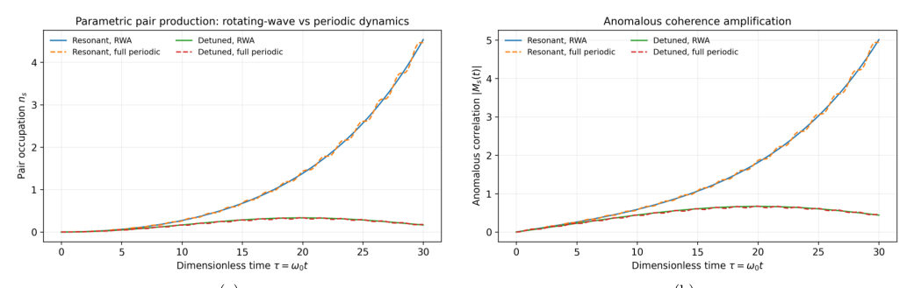
<figcaption class="paper-figure-caption"><b>Fig 1.</b> FIG. 1. Numerical Bogoliubov dynamics starting from the quasiparticle vacuum: (a) pair occupation ns(t) and (b) anomalous coherence magnitude |Ms(t)|. Solid curves denote the rotating-wave approximation (RWA), while dashed curves are obtained by integrating the time-periodic coupling gs(t) without applying the RWA. The resonant case has Ω= 2ω0 and |Gs|/ω0 = 0.05; the detuned case has ∆s = 2|Gs|. Resonance produces parametric growth of both quantities, whereas the detuned solutions remain bounded. The small oscillatory deviations of the full-periodic results reflect counter-rotating contributions.</figcaption>
</figure>
<figure class="paper-figure-card">
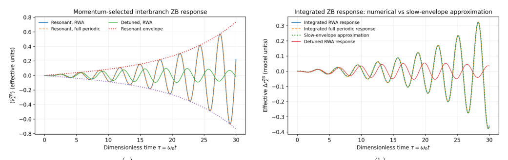
<figcaption class="paper-figure-caption"><b>Fig 2.</b> FIG. 2. Numerical parametric enhancement of the momentum-selected, effective ZB response. (a) Interbranch contribution ⟨bvZB x ⟩evaluated from the anomalous correlation and the velocity matrix elements at kx0 = 0.25, ky0 = 0. The rotating-wave and full-periodic calculations closely agree at resonance; the detuned RWA response remains bounded. Dotted curves indicate the resonant amplitude envelope. (b) Corresponding effective ZB displacement obtained by integrating the oscillatory velocity response. The direct time integrations using the RWA and the full-periodic model are compared with the slow-envelope approximation of Eq. (59), together with the detuned RWA result. The displacement is an...</figcaption>
</figure>
</div>

<p><strong>Summary.</strong> This paper models Zitterbewegung in optical Dirac systems using a bosonic Bogoliubov approach. It shows that time-varying external fields dynamically couple the positive and negative frequency components of the field. This coupling, when driven near resonance, parametrically amplifies the coherence, leading to a measurable and enhanced Zitterbewegung oscillation.</p>
<p><strong>Why it may be interesting.</strong> This work provides a detailed, microscopic mechanism linking parametric driving (modulation) to the generation and enhancement of quantum oscillations (ZB) via Bogoliubov pair-creation dynamics, which is highly relevant to quantum optics and nonlinear wave physics.</p>
<details>
<summary>Detailed structure</summary>
<p><strong>Main problem.</strong> The paper develops a bosonic Bogoliubov description to understand the origin and enhancement of Zitterbewegung (ZB) in time-dependent optical-Dirac systems.</p>
<p><strong>Main result.</strong> Time-dependent modulation dynamically generates anomalous Bogoliubov coupling, leading to parametric amplification of interbranch coherence, which drives and enhances the observable ZB motion.</p>
<p><strong>Method.</strong> The analysis uses second quantization to formulate a bosonic Bogoliubov Hamiltonian, analyzing the time evolution via Bogoliubov transformations in the context of the optical-Dirac equation.</p>
<p><strong>Model / system.</strong> The system is an optical medium described by the optical-Dirac equation, analyzed using a bosonic Bogoliubov Hamiltonian. The dynamics are governed by time-varying constitutive parameters that induce coupling between positive- and negative-frequency sectors.</p>
<p><strong>Key observables.</strong> Interbranch coherence ($M_{	ext{rot},s}(t)$), quasiparticle population ($n_{\alpha,s}(t)$), and the effective ZB displacement ($\Delta r_{	ext{ZB},\mu}(t)$).</p>
<p><strong>Important parameters / regimes.</strong> Modulation frequency ($\Omega$), resonance condition ($\Omega \simeq 2\omega_0$), and the time-varying quadrupolar anisotropy ($Q_{\pm 2}$).</p>
<p><strong>Assumptions / limitations.</strong> The analysis initially focuses on the leading longitudinal sector ($k_z$) and treats transverse momentum ($k_\perp$) and certain coupling terms as later corrections.</p>
<p><strong>Figures summary.</strong> Figures compare the resonant vs. off-resonant growth of anomalous coherence and show the resulting oscillatory interbranch velocity response, confirming parametric amplification at resonance.</p>
<p><strong>Paper structure.</strong> The paper progresses from establishing the Bogoliubov framework for ZB in time-dependent systems, detailing how time variation generates coupling, and finally quantifying the resonance-enhanced coherence growth that drives the observable ZB motion.</p>
</details>
<details>
<summary>Abstract</summary>
<p>We develop a bosonic Bogoliubov description of Zitterbewegung in time-dependent optical-Dirac systems. Within the optical-Dirac framework, the anomalous pair-creation and pair-annihilation terms of a bosonic Bogoliubov Hamiltonian correspond to couplings between the positive- and negative-frequency sectors, whose coherence underlies the Zitterbewegung response. When the constitutive parameters vary in time, the resulting moving-frame connection generates dynamical interbranch coupling and positive--negative-frequency coherence. Under periodic modulation, this coupling becomes resonant near $Ω\simeq2ω_0$, leading to parametric amplification of the coherence and consequently to an enhanced Zitterbewegung motion.</p>
</details>
<p><sub><a href="#top">↑ back to top</a></sub></p>

<p><a id="paper-2610.32252"></a></p>
<h3 id="measurement-speed-limit-and-cramer-rao-bound-for-time-averaged-estimators"><a href="http://arxiv.org/abs/2610.32252v1">Measurement speed limit and Cramér-Rao bound for time-averaged estimators</a></h3>
<p><strong>Authors:</strong> Hiroyuki Odajima, Andreas Dechant<br>
<strong>Type:</strong> theory · <strong>Category:</strong> statistical mechanics · <strong>PDF:</strong> <a href="https://arxiv.org/pdf/2610.32252v1">https://arxiv.org/pdf/2610.32252v1</a><br>
<strong>Analysis basis:</strong> full PDF text, analyzed in chunks
<strong>Topic relevance:</strong> <code>quantum measurements</code> <strong>3/5</strong> · <code>Keldysh / 2PI / non-Gaussian methods</code> <strong>2/5</strong> · <code>correlated / nonlocal dissipation</code> <strong>2/5</strong> · <code>driven-dissipative phase transition</code> <strong>2/5</strong> · <code>methods for driven-dissipative</code> <strong>2/5</strong> · <code>non-equilibrium universality</code> <strong>2/5</strong> · <code>analog quantum simulation</code> <strong>1/5</strong></p>
<div class="figure-strip-hint">↔ Scroll figures horizontally</div>
<div class="paper-figures-scroll">
<figure class="paper-figure-card">
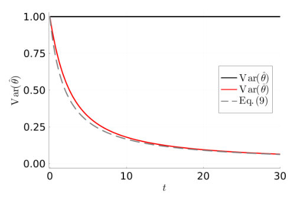
<figcaption class="paper-figure-caption"><b>Fig 1.</b> FIG. 1. The variance of the time-averaged estimator Eq. (12) (red) as a function of time. The time-averaged estimator re- sults in a reduced variance compared to the instantaneous es- timator ˆθ (black). At the same time, it remains lower bounded by the generalized CRB Eq. (9) (gray dashed), which becomes asymptotically tight at long times.</figcaption>
</figure>
<figure class="paper-figure-card">
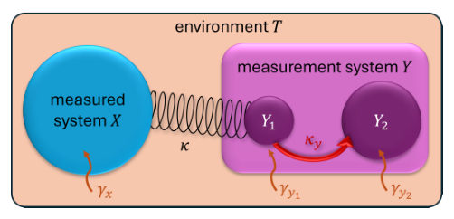
<figcaption class="paper-figure-caption"><b>Fig 2.</b> FIG. 3. Illustration of the two-component measurement sys- tem Eq. (35). The degree of freedom Y1 is coupled to the measured system X via a symmetric coupling with spring constant κ. Y2 then performs a back-actio-free measurement of Y2 through the asymmetric coupling κY . All degrees of freedom are in contact with an environment at temperature T through friction coefficients γX, γY1 and γY2, respectively.</figcaption>
</figure>
<figure class="paper-figure-card">
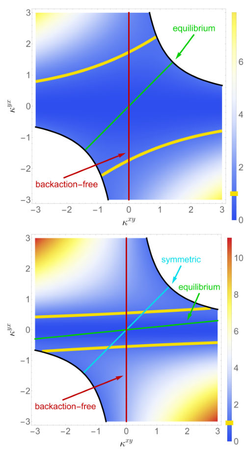
<figcaption class="paper-figure-caption"><b>Fig 3.</b> FIG. 2. The steady-state ratio between the Fisher informa- tion of Y and X, η = F Y,ss θ / as a function of the coupling constants κXY and κY X for the linear system Eq. (10). The yellow lines indicate the value 1, beyond these lines, the Fisher information of Y is larger than that of X. The green line cor- responds to the equilibrium condition κXY = κY X, the red line to a back-action-free measurement κXY = 0. The black lines indicate the boundary of the stable parameter region where a steady state exists. The left panel shows the re- sult for equal temperatures T X = T Y = 1, while in the right panel, the temperature of the measurement system Y is lower, T Y = 0.1. The light blue line in...</figcaption>
</figure>
<figure class="paper-figure-card">
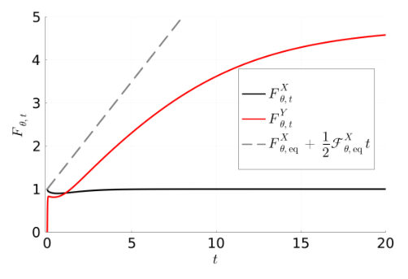
<figcaption class="paper-figure-caption"><b>Fig 4.</b> FIG. 4. Fisher information of X (black) and Y (red) versus time for the sensor Eq. (35). Owing to its non-symmetric interactions, Y eventually surpasses the equilibrium value of X (= 1), but always remains below the speed limit Eq. (6) (dashed). Parameters: kX = kY = 1, κ = κY = 10, γX = 1, γY1 = 0.2, γY2 = 5, T = 1.</figcaption>
</figure>
</div>

<p><strong>Summary.</strong> This work establishes fundamental speed limits and generalized Cramér-Rao bounds for estimating parameters in coupled physical systems. It shows that while equilibrium measurements limit precision, driving the system out of equilibrium or using ideal cooling can enhance measurement accuracy by allowing the sensor to extract more information than the system itself possesses.</p>
<p><strong>Why it may be interesting.</strong> It provides a rigorous, quantitative framework for understanding how non-equilibrium thermodynamics and engineered coupling can fundamentally improve measurement sensitivity beyond standard equilibrium bounds, which is highly relevant to quantum sensing.</p>
<details>
<summary>Detailed structure</summary>
<p><strong>Main problem.</strong> The paper quantifies the fundamental limits on parameter estimation precision when the parameter is inferred indirectly by observing a coupled measurement system rather than the system of interest directly.</p>
<p><strong>Main result.</strong> Non-equilibrium interactions or ideal sensor cooling can enhance parameter estimation precision beyond the limits set by the measured system alone, leading to a generalized Cramér-Rao bound for time-averaged estimators.</p>
<p><strong>Method.</strong> The analysis relies on deriving and bounding the Fisher Information, which serves as the fundamental measure of estimation precision, using techniques derived from Langevin and Fokker-Planck equations.</p>
<p><strong>Model / system.</strong> The study considers a coupled system $(X, Y)$ where $X$ is the system of interest and $Y$ is the measurement sensor. The dynamics are modeled using overdamped or underdamped Langevin equations, analyzed in both equilibrium and non-equilibrium regimes.</p>
<p><strong>Key observables.</strong> Fisher Information ($F$), variance of estimators ($    ext{Var}(\hat{  heta})$), and the Fisher information ratio ($\eta = F_{Y|   heta} / F_{X|   heta}$).</p>
<p><strong>Important parameters / regimes.</strong> Temperature ratio ($T_Y/T_X$), coupling strengths ($\kappa$), and time ($t$).</p>
<p><strong>Assumptions / limitations.</strong> The analysis often assumes the overdamped limit or uses linear dynamics for tractability; the concept of 'back-action-free' measurement is analyzed, though its quantum mechanical realization is noted as complex.</p>
<p><strong>Figures summary.</strong> Figures illustrate the variance of time-averaged vs. instantaneous estimators, and phase diagrams show how the ratio of Fisher information ($\eta_{ss}$) exceeds unity under non-equilibrium or cooling conditions.</p>
<p><strong>Paper structure.</strong> The paper progresses by first establishing the standard CRB, then analyzing the equilibrium case where sensor information is bounded by the system's information. It then extends the analysis to non-equilibrium and back-action-free scenarios, deriving a speed limit and a generalized CRB for time-averaged estimators.</p>
</details>
<details>
<summary>Abstract</summary>
<p>We consider a measured system $X$ containing a parameter $θ$ of interest and the problem of estimating this parameter by observing a second, coupled measurement system $Y$. We show that, in thermodynamic equilibrium, the Fisher information of $Y$ associated with the parameter is bounded by that of $X$, implying that conservative interactions between $X$ and $Y$ reduce the precision of parameter estimation. Conversely, out of equilibrium, we show that the Fisher information of $Y$ can exceed that of $X$, so that non-conservative interactions can potentially increase the precision of parameter estimation. For idealized, back-action-free measurements, where the coupling to $Y$ does not perturb $X$, we derive a speed limit for the increase of Fisher information of $Y$. This speed limit only depends on the properties of the measured system $X$ and places a fundamental bound on the precision of any back-action-free measurement. As a corollary, we obtain a generalized Cramér-Rao bound (CRB) for time-averaged estimators. We illustrate our results for linear dynamics and suggest a scheme for disturbance-free non-equilibrium sensing with improved accuracy.</p>
</details>
<p><sub><a href="#top">↑ back to top</a></sub></p>

<p><a id="paper-2610.32908"></a></p>
<h3 id="nonclassicality-from-incomplete-fock-state-statistics"><a href="http://arxiv.org/abs/2610.32908v1">Nonclassicality from Incomplete Fock-State Statistics</a></h3>
<p><strong>Authors:</strong> Martin Žonda, Pavel Baláž, Lukáš Lachman, Darren W. Moore, Tomáš Novotný, Radim Filip<br>
<strong>Type:</strong> theory · <strong>Category:</strong> other · <strong>PDF:</strong> <a href="https://arxiv.org/pdf/2610.32908v1">https://arxiv.org/pdf/2610.32908v1</a><br>
<strong>Analysis basis:</strong> full PDF text, analyzed in chunks
<strong>Topic relevance:</strong> <code>Tavis-Cummings &amp; cavity-many-emitter</code> <strong>3/5</strong> · <code>methods for driven-dissipative</code> <strong>3/5</strong> · <code>quantum measurements</code> <strong>3/5</strong> · <code>Full counting statistics</code> <strong>1/5</strong> · <code>analog quantum simulation</code> <strong>1/5</strong> · <code>correlated / nonlocal dissipation</code> <strong>1/5</strong> · <code>driven-dissipative phase transition</code> <strong>1/5</strong></p>
<div class="figure-strip-hint">↔ Scroll figures horizontally</div>
<div class="paper-figures-scroll">
<figure class="paper-figure-card">
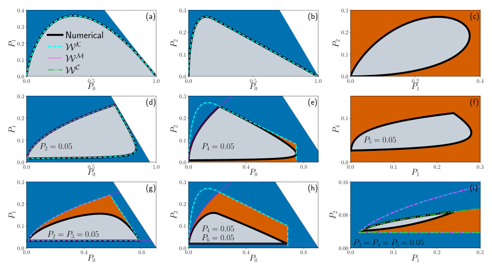
<figcaption class="paper-figure-caption"><b>Fig 1.</b> Figure 1. Comparison of nonclassical regions identified by the numerical criterion and analytical witnesses in reduced spaces spanned by selected sets of probabilities {Pk}. Blue regions correspond to states identified as nonclassical by both approaches, while orange regions indicate nonclassical states detected only by the numerical optimization. White regions denote nonphysical probability combinations with P</figcaption>
</figure>
<figure class="paper-figure-card">
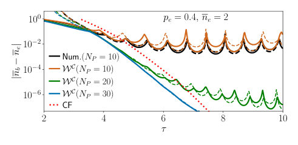
<figcaption class="paper-figure-caption"><b>Fig 2.</b> Figure 3. Distance of the nonclassicality boundaries from the thermal-balance condition ¯ne = 2 for pe = 0.40 [see Fig. 2(a4)]. Solid and dashed lines correspond to the bound- aries below and above ¯ne, respectively. Results are shown for the numerical criterion, the counting matrix criterion WC</figcaption>
</figure>
<figure class="paper-figure-card">
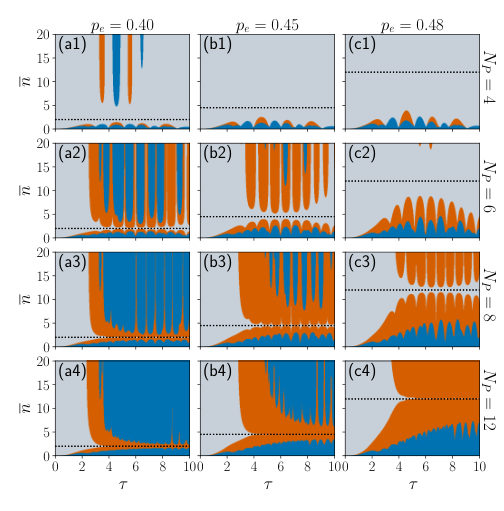
<figcaption class="paper-figure-caption"><b>Fig 3.</b> Figure 2. Comparison of nonclassical regions obtained us- ing analytical WK and numerical criteria for the Jaynes– Cummings model for the initial excited-state population pe = 0.4, 0.45, 0.48, respectively kBTq/ℏω = 2.47, 4.98, 12.5, and different numbers of probabilities NP (see right vertical axis) used in the criteria. The dark blue region represents non- classicality detected by the analytical criterion, while the orange regions correspond to additional nonclassicality de- tected only by the numerical criterion. The horizontal dot- ted line indicates the thermal-equilibrium condition given by ¯n = ¯ne ≡pe/(1 −2pe)=2,4.5, 12.</figcaption>
</figure>
<figure class="paper-figure-card">

<figcaption class="paper-figure-caption"><b>Fig 4.</b> Figure 1. Comparison of nonclassical regions obtained from the numerical criterion with classicality boundaries in the reduced space of two probabilities (Pi, Pj), where each subplot corresponds to a specific pair (i, j) with j ≤8. The orange regions indicate nonclassical states identified by the numerical optimization. The blue solid curves show the corresponding analytical boundaries Eqs. (14) (15) (W0n). The dashed black curves represent the two-probability boundaries given by Eq. (25). As discussed in the text, the later curves coincide with the true classical boundary only in cases where they define a convex envelope; otherwise, they capture only a subset of the classical boundary....</figcaption>
</figure>
<figure class="paper-figure-card">
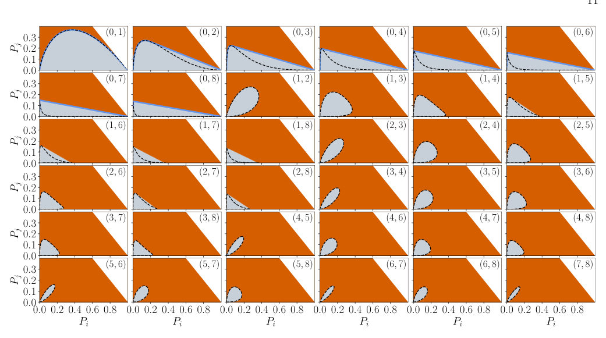
<figcaption class="paper-figure-caption"><b>Fig 5.</b> Figure 2 presents several representative examples of nonclassicality boundaries obtained from the numerical op- timization (black curves) and from the available analytical criteria. The analytical results are constructed from all applicable witnesses W0n [Eq. (15)], WKk [Eq. (20)], and majorization witnesses WM. For clarity, the boundaries generated by the Klyshko-type witnesses are shown as blue dashed curves, while those obtained from majorization criteria are shown as gray dotted curves. The resulting analytical boundary, obtained by combining all available witnesses, is displayed as a solid red curve. The selected examples illustrate several important features. Panel (a) shows the case...</figcaption>
</figure>
</div>

<p><strong>Summary.</strong> This paper introduces a general numerical framework to certify quantum nonclassicality in bosonic systems directly from partial measurements of photon occupation probabilities. By solving a semi-infinite linear program, the authors construct optimal witnesses that surpass the detection limits of existing analytical criteria. The method is successfully applied to the Jaynes-Cummings model, revealing previously undetected nonclassical behavior near thermal equilibrium.</p>
<p><strong>Why it may be interesting.</strong> This work provides a powerful, general computational tool for quantum optics and AMO physics, allowing researchers to map out nonclassical regimes in complex open quantum systems (like the JC model) where traditional analytical bounds fail or are incomplete.</p>
<details>
<summary>Detailed structure</summary>
<p><strong>Main problem.</strong> The paper addresses the challenge of certifying quantum nonclassicality in bosonic systems using only incomplete measurements of occupation probabilities, thereby avoiding the need for full state reconstruction.</p>
<p><strong>Main result.</strong> The developed numerical framework successfully constructs optimal linear nonclassicality witnesses that generally detect larger nonclassical regions than existing analytical criteria. This was demonstrated in a case study on the Jaynes-Cummings model, revealing nonclassicality near thermal equilibrium.</p>
<p><strong>Method.</strong> The core method involves formulating the nonclassicality certification as solving a semi-infinite linear program, which is solved numerically using an iterative cutting-plane procedure.</p>
<p><strong>Model / system.</strong> The primary physical system studied is bosonic systems, with a detailed case study applied to the resonant Jaynes-Cummings (JC) model involving a qubit and a bosonic mode. Another test case involves probabilistic boson addition to a coherent state.</p>
<p><strong>Key observables.</strong> Occupation probabilities of Fock states ($P_k$), and the resulting nonclassicality witness function $W(\lambda; \mathbf{P})$.</p>
<p><strong>Important parameters / regimes.</strong> Interaction time ($ au$), initial excited-state population ($p_e$), and the number of measured probabilities ($N_P$).</p>
<p><strong>Assumptions / limitations.</strong> The method assumes that nonclassicality can be detected if the measured probability vector cannot be expressed as a convex combination of Poisson distributions (coherent states).</p>
<p><strong>Figures summary.</strong> Figures map out nonclassicality regions in parameter spaces (e.g., $p_e$ vs $N_P$ for the JC model), comparing the detection boundaries found by the general numerical criterion against those from specific analytical witnesses.</p>
<p><strong>Paper structure.</strong> The paper establishes the general mathematical framework using linear programming to define the witness. It then compares this general numerical approach against known analytical criteria (Klyshko, Counting Matrix). Finally, it applies the method to the JC model and boson addition to demonstrate its superior detection capability in specific physical regimes.</p>
</details>
<details>
<summary>Abstract</summary>
<p>Nonclassicality in bosonic systems can be certified directly from occupation probabilities without full state reconstruction. To complete a library of such criteria we introduce a numerical framework that constructs optimal linear nonclassicality witnesses from arbitrary subsets of measured occupation probabilities by solving a semi-infinite linear program. The method contains known analytical criteria as special cases while generally detecting substantially larger nonclassical regions. We provide an open-source implementation of the numerical optimization together with the analytical criteria discussed here, enabling direct application of the framework to measured occupation statistics across bosonic platforms. As a case study, we apply it to the resonant Jaynes--Cummings model with thermal states and reveal nonclassicality at short interaction times and close to thermal balance, where detection of nonclassicality is otherwise challenging.</p>
</details>
<p><sub><a href="#top">↑ back to top</a></sub></p>

<p><a id="paper-2610.32610"></a></p>
<h3 id="optimizing-quantum-battery-via-counterdiabatic-driving"><a href="http://arxiv.org/abs/2610.32610v1">Optimizing Quantum Battery via Counterdiabatic driving</a></h3>
<p><strong>Authors:</strong> F. Ahmadi, S. Salimi<br>
<strong>Type:</strong> theory · <strong>Category:</strong> other · <strong>PDF:</strong> <a href="https://arxiv.org/pdf/2610.32610v1">https://arxiv.org/pdf/2610.32610v1</a><br>
<strong>Analysis basis:</strong> full PDF text, analyzed in chunks
<strong>Topic relevance:</strong> <code>methods for driven-dissipative</code> <strong>3/5</strong> · <code>Tavis-Cummings &amp; cavity-many-emitter</code> <strong>2/5</strong> · <code>analog quantum simulation</code> <strong>2/5</strong> · <code>driven-dissipative phase transition</code> <strong>2/5</strong> · <code>Keldysh / 2PI / non-Gaussian methods</code> <strong>1/5</strong> · <code>correlated / nonlocal dissipation</code> <strong>1/5</strong> · <code>non-equilibrium universality</code> <strong>1/5</strong> · <code>quantum measurements</code> <strong>1/5</strong></p>
<div class="figure-strip-hint">↔ Scroll figures horizontally</div>
<div class="paper-figures-scroll">
<figure class="paper-figure-card">
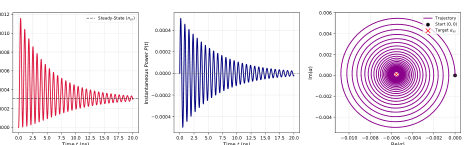
<figcaption class="paper-figure-caption"><b>Fig 1.</b> FIG. 1. Transient charging dynamics under a constant (step) drive. (a) Evolution of the cavity mean photon num- ber n(t) = |α(t)|2 as a function of time t. The black dashed line denotes the target steady-state population nss = |αss|2. Due to the abrupt non-adiabatic switch-on, the stored energy exhibits prominent underdamped oscillations and overshoot rather than smooth convergence. (b) Instantaneous charging power P(t) = dE(t)/dt. The power oscillates between posi- tive and negative regimes, demonstrating recurring backflow of energy between the cavity and the driving field. (c) Phase space trajectory in the complex plane (Re(α), Im(α)). In- stead of a direct, monotonic path toward the...</figcaption>
</figure>
<figure class="paper-figure-card">
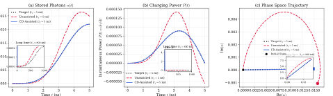
<figcaption class="paper-figure-caption"><b>Fig 2.</b> FIG. 3. Comparative charging dynamics. Adiabatic tar- get path (black dotted), unassisted protocol (red dashed), and CD-assisted protocol (blue solid). (a) Stored photon number n(t) = |α(t)|2. (b) Instantaneous charging power P(t) = dn/dt. (c) Phase-space trajectory. Insets display long- time behavior.</figcaption>
</figure>
<figure class="paper-figure-card">
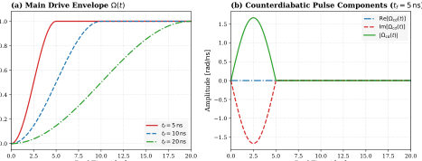
<figcaption class="paper-figure-caption"><b>Fig 3.</b> FIG. 2. Control drive pulse profiles. (a) Normalized envelope of the uncorrected adiabatic pulse (dashed blue) and the magnitude of the CD-corrected drive (solid red) for tf = 10 ns. (b) Decomposition of ΩCD(t) into in-phase (green, dash-dotted) and quadrature (purple, dashed) components. Given γ ≪ωeff, the real component is negligible, confirming a purely quadrature-driven correction.</figcaption>
</figure>
<figure class="paper-figure-card">
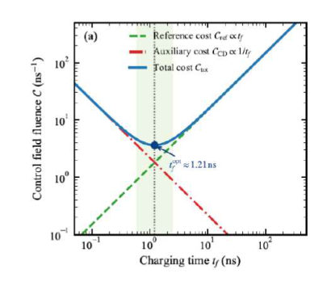
<figcaption class="paper-figure-caption"><b>Fig 4.</b> FIG. 4. Thermodynamic cost trade-off and charging power enhancement of the counterdiabatic protocol. (a) Total con- trol field cost Ctot (solid blue line) as a function of charging time tf, decomposed into the reference field cost Cref ∝tf (dashed gray line) and the CD driving cost CCD ∝1/tf (dash-dotted red line). The optimal charging duration topt f = π/( √</figcaption>
</figure>
<figure class="paper-figure-card">
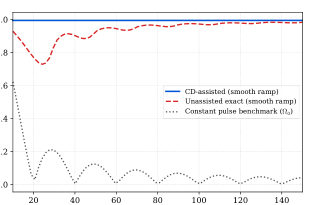
<figcaption class="paper-figure-caption"><b>Fig 5.</b> FIG. 5. Geodesic efficiency ηgeo as a function of the charging time tf. The CD-assisted protocol (solid blue line) main- tains near-optimal geodesic efficiency (ηgeo ≈1) across the entire driving range, strictly eliminating geometric phase ac- cumulation. In contrast, the unassisted smooth ramp (dashed red line) experiences an efficiency dip to ≈0.73 near tf ≈ 25 ns due to nonadiabatic phase excursions before stabilizing asymptotically, while the constant-pulse benchmark (dotted gray line) exhibits pronounced oscillations with severely de- graded efficiency.</figcaption>
</figure>
</div>

<p><strong>Summary.</strong> This paper investigates optimizing the charging of a quantum battery in a cQED setup by comparing standard adiabatic protocols with Counterdiabatic (CD) driving. CD driving is shown to suppress energy loss and unwanted oscillations, enabling significantly faster and more efficient energy transfer. The results confirm that CD techniques can achieve near-ideal energy storage while maintaining the system's natural decay characteristics.</p>
<p><strong>Why it may be interesting.</strong> This work directly addresses fast, controlled energy transfer in quantum devices, which is crucial for quantum memory and energy harvesting applications in quantum optics and circuit QED.</p>
<details>
<summary>Detailed structure</summary>
<p><strong>Main problem.</strong> The paper aims to optimize the energy charging of a quantum battery in an open system to achieve fast, lossless power transfer.</p>
<p><strong>Main result.</strong> Counterdiabatic (CD) driving successfully accelerates the charging process by suppressing non-adiabatic excitations, achieving the shortest possible evolution distance between states.</p>
<p><strong>Method.</strong> The authors analyze the dynamics using the Lindblad master equation and employ the Counterdiabatic driving technique, which adds an auxiliary control field to the Hamiltonian.</p>
<p><strong>Model / system.</strong> The system is a cavity-based quantum battery implemented in a circuit quantum electrodynamics (cQED) architecture, modeled by an effective Hamiltonian derived in the dispersive regime.</p>
<p><strong>Key observables.</strong> Internal energy $E(t)$, instantaneous charging power $P(t)$, and the geometric fidelity $\eta_{geo}$ are key observables.</p>
<p><strong>Important parameters / regimes.</strong> The analysis considers the dissipation rate $\kappa$, the coupling strength $\lambda$, and the optimal charging time $t_{opt,f}$.</p>
<p><strong>Assumptions / limitations.</strong> The analysis assumes a zero-temperature environment for the dissipator and that the system remains in a pure coherent state throughout the process.</p>
<p><strong>Figures summary.</strong> Figures illustrate the transient dynamics of the mean photon number and power for constant vs. CD driving, showing oscillations in the former and stable tracking in the latter.</p>
<p><strong>Paper structure.</strong> The paper progresses from establishing the open-system dynamics (Lindblad equation) to comparing standard adiabatic protocols with CD driving, culminating in the derivation of optimal control costs and the assessment of storage lifetime.</p>
</details>
<details>
<summary>Abstract</summary>
<p>We analyze the energy charging of a quantum battery within an open quantum framework, where the interaction between the battery element and an external power source is mediated by an ancilla system acting as a controllable switch. Specifically, we investigate the charging and discharging dynamics of a cavity-based quantum battery coupled to a driven qubit functioning as the charger. To ensure lossless power transfer, we utilize an adiabatic evolution protocol. Furthermore, we implement counterdiabatic driving, achieved by applying an auxiliary control field to the original Hamiltonian, to suppress undesired transitions and realize fast adiabatic dynamics. This scheme significantly accelerates the charging process. We demonstrate that the charging efficiency under adiabatic evolution is enhanced and exhibits stable, non-oscillatory behavior, and we determine the optimal duration for the operation. Finally, we show that counterdiabatic driving minimizes the path length between the initial and final states, inducing the shortest possible evolution distance.</p>
</details>
<p><sub><a href="#top">↑ back to top</a></sub></p>

<p><a id="paper-2610.32936"></a></p>
<h3 id="generating-entanglement-in-quantum-matter-with-pathway-entangled-photons-via-resonant-inelastic-x-ray-scattering"><a href="http://arxiv.org/abs/2610.32936v1">Generating entanglement in quantum matter with pathway-entangled photons via resonant inelastic X-ray scattering</a></h3>
<p><strong>Authors:</strong> Chunjing Jia, Valentin Walther, Laimei Nie<br>
<strong>Type:</strong> theory · <strong>Category:</strong> strongly correlated electrons · <strong>PDF:</strong> <a href="https://arxiv.org/pdf/2610.32936v1">https://arxiv.org/pdf/2610.32936v1</a><br>
<strong>Analysis basis:</strong> full PDF text, analyzed in chunks
<strong>Topic relevance:</strong> <code>analog quantum simulation</code> <strong>3/5</strong> · <code>interference shaping light</code> <strong>3/5</strong> · <code>quantum measurements</code> <strong>2/5</strong> · <code>Full counting statistics</code> <strong>1/5</strong> · <code>methods for driven-dissipative</code> <strong>1/5</strong> · <code>quantum optics experiment</code> <strong>1/5</strong></p>
<div class="figure-strip-hint">↔ Scroll figures horizontally</div>
<div class="paper-figures-scroll">
<figure class="paper-figure-card">
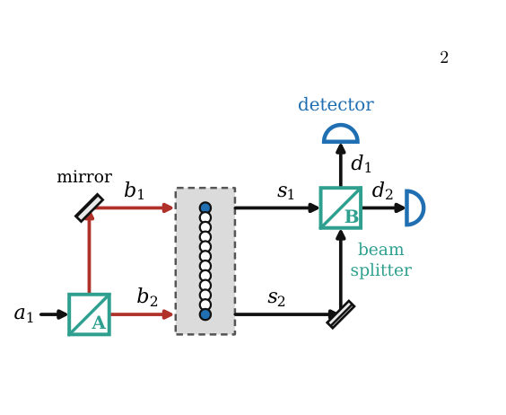
<figcaption class="paper-figure-caption"><b>Fig 1.</b> Figure 1. Pathway-entangled-photon RIXS on a one- dimensional sample. The incident mode a1 is coherently di- vided by a 50/50 beam splitter A into arms b1 and b2, which are focused on the two ends j = 1 and j = N of the chain (gray box; the two illuminated end sites are shown in blue). The scattered modes s1, s2 are recombined on a second 50/50 splitter B and registered by detectors d1, d2. In the energy- resolved configuration analyzed in the main text, an energy analyzer in each arm (not drawn) transmits only the inelas- tically scattered photon at ℏωout = ℏωin −ℏωloss, so that a single click at d1 or d2 heralds the prepared state.</figcaption>
</figure>
<figure class="paper-figure-card">
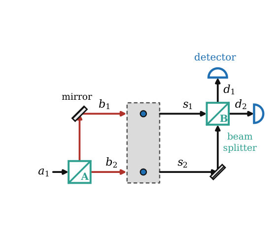
<figcaption class="paper-figure-caption"><b>Fig 2.</b> Figure 2. The two-site limit of Fig. 1. The sample is reduced to two decoupled sites, each placed under an optical pathway. An excitation created at site 1 cannot propagate, so the two ends feed the orthogonal, degenerate final states |eg⟩and |ge⟩. This is the solid-state counterpart of the two atomic ensembles of the DLCZ protocol [15], with the two illuminated sites playing the role of the ensembles and the core-hole resonance playing the role of the Raman drive.</figcaption>
</figure>
<figure class="paper-figure-card">
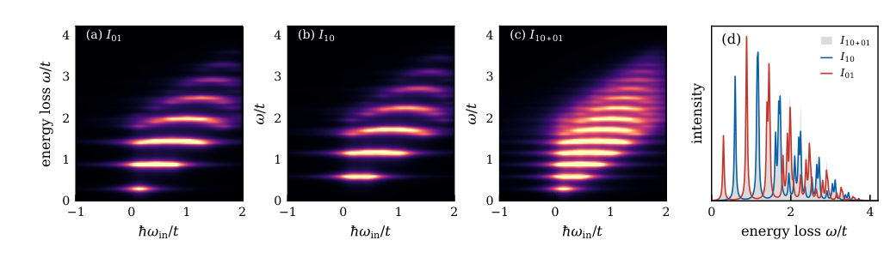
<figcaption class="paper-figure-caption"><b>Fig 3.</b> Figure 3. Entangled-photon RIXS spectra of the open tight-binding chain Eq. (4.1), at Φ = 0, N = 20 sites, Γ/t = 0.20, and half filling. Here ω = ωloss. (a)(b) Energy-loss maps versus incident energy ℏωin/t for the two detector channels. By Eq. (4.5) the two channels collect mutually exclusive sets of final states, sorted by the reflection parity (−1)p+q, i.e. every line present in (a) is absent in (b) and vice versa. (c) Their sum, which is independent of the beam splitter and of Φ based on the sum rule Eq. (2.18). (d) Energy-loss cut comparing the two parity-resolved spectra against the total spectrum (gray).</figcaption>
</figure>
<figure class="paper-figure-card">
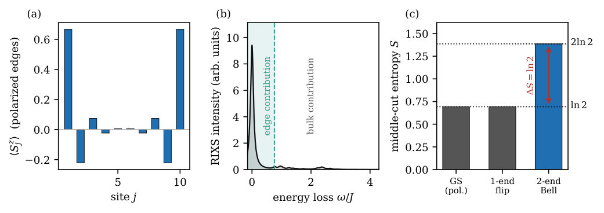
<figcaption class="paper-figure-caption"><b>Fig 4.</b> Figure 4. Entangling the two ends of an AKLT/Haldane chain: exact diagonalization of Eq. (5.1) with N = 10 sites. (a) Local magnetization ⟨Sz j ⟩of the ground state with polarized edges, showing the exponentially localized edge modes. (b) RIXS response P</figcaption>
</figure>
</div>

<p><strong>Summary.</strong> The authors propose an interferometric RIXS technique to generate entanglement across spatially separated parts of a quantum material. By splitting and recombining X-ray photons, the process projects the material into a coherent superposition of excitations. This method successfully demonstrates entanglement generation in the Haldane chain, offering a powerful new diagnostic tool for studying quantum correlations in condensed matter systems.</p>
<p><strong>Why it may be interesting.</strong> This work bridges quantum optics (interferometry, photon entanglement) with condensed matter physics (spin chains, correlated materials), providing a novel, non-destructive spectroscopic tool to probe quantum correlations in solids.</p>
<details>
<summary>Detailed structure</summary>
<p><strong>Main problem.</strong> To generate and detect entanglement between spatially separated regions of a solid-state material using resonant inelastic X-ray scattering (RIXS).</p>
<p><strong>Main result.</strong> The proposed interferometric RIXS protocol successfully generates heralded entangled states, reaching an entanglement entropy of $2\ln 2$ in the Haldane chain, significantly higher than conventional measurements.</p>
<p><strong>Method.</strong> The method involves using a Mach-Zehnder interferometer setup with X-ray photons, analyzing the resulting count rates ($I_{10} - I_{01}$) via a Kramers-Heisenberg formalism.</p>
<p><strong>Model / system.</strong> The study applies the protocol to several models, including two decoupled sites, an open tight-binding chain, and the spin-1 Haldane (AKLT) chain, which serves as the primary interacting system.</p>
<p><strong>Key observables.</strong> Entanglement entropy ($S$), difference in count rates ($I_{10} - I_{01}$), and local magnetization ($\langle S^z_j 
angle$).</p>
<p><strong>Important parameters / regimes.</strong> The relative phase $\Phi$ between the two interferometer arms, and the gap ($\Delta_H$) separating spin-flip excitations from bulk excitations.</p>
<p><strong>Assumptions / limitations.</strong> The analysis assumes coherence between the two interferometer arms and ideal energy selection capabilities of the analyzer.</p>
<p><strong>Figures summary.</strong> Figures illustrate the two-site limit, parity-dependent routing in the tight-binding chain, and a comparison of entanglement entropy for the AKLT chain, showing the increase to $2\ln 2$ for the heralded state.</p>
<p><strong>Paper structure.</strong> The paper introduces the interferometric RIXS protocol, derives the state evolution using the Kramers-Heisenberg formalism, analyzes the results in the two-site limit, extends the analysis to the tight-binding chain, and finally demonstrates entanglement generation in the Haldane chain.</p>
</details>
<details>
<summary>Abstract</summary>
<p>Resonant inelastic X-ray scattering (RIXS) is conventionally used to probe elementary excitations and correlations in quantum materials. Here, we propose an interferometric RIXS protocol that instead creates entanglement between spatially separated regions of a solid-state material. An incident X-ray photon is coherently split by a beam splitter into two arms illuminating opposite ends of a sample. Recombining the scattered photons at a second beam splitter and detecting an energy-selected photon then projects the material into a coherent superposition of excitations at the two ends. This protocol is the X-ray, solid-state analogue of the Duan-Lukin-Cirac-Zoller (DLCZ) heralding scheme. Using a Kramers-Heisenberg formalism with quantized photon modes, we show that orthogonal and degenerate end excitations yield maximally entangled states. We illustrate this mechanism in three models: (1) two decoupled sites yield a heralded Bell state. (2) An open tight-binding chain exhibits reflection-parity-dependent interference, providing a benchmark for the interferometer's coherence. (3) A spin-1 Haldane (AKLT) chain yields an entangled pair of fractionalized edge spins. We also discuss practical considerations and challenges for realizing the protocol in X-ray experiments.</p>
</details>
<p><sub><a href="#top">↑ back to top</a></sub></p>

<p><a id="paper-2610.31947"></a></p>
<h3 id="noise-assisted-quantum-entanglement-memory-enhanced-coherence-in-stochastic-jaynes-cummings-dynamics"><a href="http://arxiv.org/abs/2610.31947v1">Noise-Assisted Quantum Entanglement: Memory-Enhanced Coherence in Stochastic Jaynes-Cummings Dynamics</a></h3>
<p><strong>Authors:</strong> Fang Wang, Quanzhen Ding, Jun Jing, Ting Yu<br>
<strong>Type:</strong> theory · <strong>Category:</strong> other · <strong>PDF:</strong> <a href="https://arxiv.org/pdf/2610.31947v1">https://arxiv.org/pdf/2610.31947v1</a><br>
<strong>Analysis basis:</strong> full PDF text, analyzed in chunks
<strong>Topic relevance:</strong> <code>correlated / nonlocal dissipation</code> <strong>3/5</strong> · <code>Tavis-Cummings &amp; cavity-many-emitter</code> <strong>2/5</strong> · <code>methods for driven-dissipative</code> <strong>2/5</strong> · <code>Keldysh / 2PI / non-Gaussian methods</code> <strong>1/5</strong> · <code>analog quantum simulation</code> <strong>1/5</strong> · <code>driven-dissipative phase transition</code> <strong>1/5</strong> · <code>quantum measurements</code> <strong>1/5</strong></p>
<div class="figure-strip-hint">↔ Scroll figures horizontally</div>
<div class="paper-figures-scroll">
<figure class="paper-figure-card">
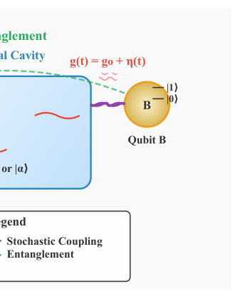
<figcaption class="paper-figure-caption"><b>Fig 1.</b> Fig. 1 Schematic of the JC model with stochastic coupling g(t) = g0 + η(t) between two qubits (A and B) and an optical cavity. The stochastic noise η(t) (white noise or OU noise) affects the qubit-cavity coupling strength, generating entanglement between the qubits through cavity-mediated interactions.</figcaption>
</figure>
<figure class="paper-figure-card">
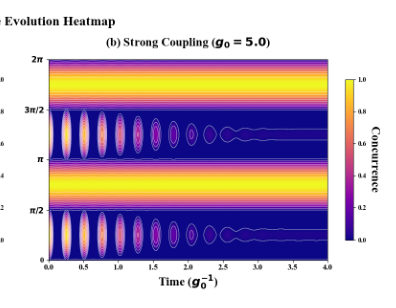
<figcaption class="paper-figure-caption"><b>Fig 2.</b> Fig. 2 Concurrence evolution for initial states (cos θ|01⟩+ sin θ|10⟩) ⊗|1⟩under OU noise (Γ = 1, γ = 0.1): (a) weak coupling regime (g0 = 0.5, g0/ω = 0.5); (b) strong coupling regime (g0 = 5, g0/ω = 5).</figcaption>
</figure>
<figure class="paper-figure-card">
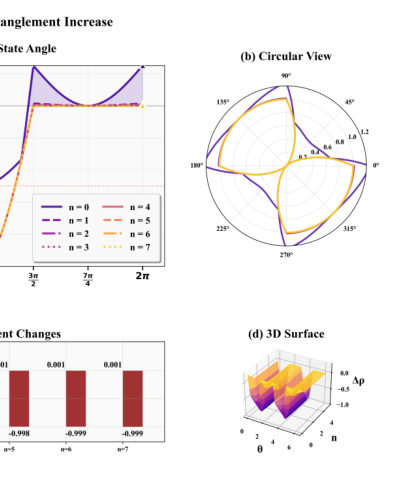
<figcaption class="paper-figure-caption"><b>Fig 3.</b> Fig. 3 Long-time entanglement increase ∆(ρ): (a) versus initial angle θ; (b) circular view; (c) maxi- mum and minimum changes for different photon numbers n; (d) 3D surface plot. Parameters: Γ = 1, γ = 0.1.</figcaption>
</figure>
<figure class="paper-figure-card">
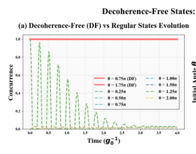
<figcaption class="paper-figure-caption"><b>Fig 4.</b> Fig. 4 Decoherence-free (DF) state analysis: (a) comparison of DF and regular state evolution under strong coupling regime (g0 = 5, g0/ω = 5); (b) evolution landscape showing DF state locations.</figcaption>
</figure>
<figure class="paper-figure-card">

<figcaption class="paper-figure-caption"><b>Fig 5.</b> Figure 3 provides crucial insights into the angular dependence and photon number scaling of entanglement generation efficiency. The periodic structure in Fig. 3(a)(b) with maxima at θ = 0, π</figcaption>
</figure>
</div>

<p><strong>Summary.</strong> This research analyzes entanglement dynamics in a two-qubit cavity system subjected to fluctuating coupling noise. By comparing Markovian and non-Markovian noise models, the authors establish that environmental memory time is a crucial control parameter. The findings provide detailed insights into engineering entanglement preservation by selecting appropriate initial states and noise characteristics.</p>
<p><strong>Why it may be interesting.</strong> This work directly addresses the control of quantum information in realistic, noisy quantum optical systems, providing concrete guidelines on how environmental memory effects can be harnessed to protect quantum entanglement.</p>
<details>
<summary>Detailed structure</summary>
<p><strong>Main problem.</strong> The paper investigates how qubit entanglement dynamics are affected by stochastic fluctuations in the coupling strength within a two-qubit cavity system.</p>
<p><strong>Main result.</strong> The study reveals that the nature of the noise (Markovian vs. non-Markovian) and the initial cavity state (Fock vs. coherent) critically determine entanglement preservation, with non-Markovian noise showing resilience and revivals.</p>
<p><strong>Method.</strong> The authors use analytical solutions and numerical simulations to calculate entanglement (concurrence) by averaging over the classical stochastic noise process, treating the system dynamics via the time-evolution operator.</p>
<p><strong>Model / system.</strong> The system is a two-qubit cavity setup governed by an extended Jaynes-Cummings Hamiltonian, where the coupling strength $g(t)$ is modulated by white or Ornstein-Uhlenbeck noise. The analysis is performed in the resonant regime ($\omega_f = \omega$).</p>
<p><strong>Key observables.</strong> Qubit-qubit entanglement (quantified by concurrence), entanglement sudden death, and entanglement revivals.</p>
<p><strong>Important parameters / regimes.</strong> Noise type (Markovian vs. non-Markovian), cavity photon number ($n$ or $|\alpha|$), and the noise correlation time ($\gamma$).</p>
<p><strong>Assumptions / limitations.</strong> The analysis assumes the validity of the Rotating-Wave Approximation (RWA) and treats the noise $\eta(t)$ as a classical stochastic process.</p>
<p><strong>Figures summary.</strong> Figures illustrate the concurrence evolution for different initial states and coupling regimes, showing distinct oscillatory patterns and long-time decay/revival behaviors.</p>
<p><strong>Paper structure.</strong> The paper systematically compares dynamics under white noise versus OU noise, analyzing specific cavity states (Fock vs. coherent) to map out the parameter space controlling entanglement preservation.</p>
</details>
<details>
<summary>Abstract</summary>
<p>We investigate qubit entanglement dynamics in a two-qubit cavity system with stochastically fluctuating coupling strength, comparing white noise (Markovian) and Ornstein-Uhlenbeck noise (non-Markovian) processes. We analytically solve the system dynamics for both Fock and coherent cavity states and systematically characterize how initial qubit configurations affect entanglement generation and preservation. Our results reveal distinct dynamical regimes: in the Fock-state cavity, initial states in the single-excitation subspace generate robust qubit entanglement in decoherence-free subspaces, while initially entangled states in the double-excitation subspace exhibit inevitable decay without protective symmetries. For coherent cavities, we identify a critical photon-number threshold in the intermediate coherent-state amplitude regime where dynamics transition from low-frequency to high-frequency entanglement oscillations, while universal entanglement loss occurs at large amplitudes. Remarkable resilience against entanglement sudden death emerges under strong non-Markovian noise with long correlation times, where repeated revivals occur. These findings establish cavity photon statistics and environmental memory time as key control parameters for engineering qubit entanglement dynamics in qubit-cavity systems, revealing how system-environment correlations govern quantum information preservation.</p>
</details>
<p><sub><a href="#top">↑ back to top</a></sub></p>

<p><a id="paper-2610.32405"></a></p>
<h3 id="quantum-landau-lifshitz-gilbert-equation-in-ferromagnetic-conductors-and-magnetic-insulators"><a href="http://arxiv.org/abs/2610.32405v1">Quantum Landau Lifshitz Gilbert equation in ferromagnetic conductors and magnetic insulators</a></h3>
<p><strong>Authors:</strong> Ji Yang Zhu, Zheng Chuan Wang<br>
<strong>Type:</strong> theory · <strong>Category:</strong> other · <strong>PDF:</strong> <a href="https://arxiv.org/pdf/2610.32405v1">https://arxiv.org/pdf/2610.32405v1</a><br>
<strong>Analysis basis:</strong> full PDF text, analyzed in chunks
<strong>Topic relevance:</strong> <code>correlated / nonlocal dissipation</code> <strong>3/5</strong> · <code>Keldysh / 2PI / non-Gaussian methods</code> <strong>2/5</strong> · <code>driven-dissipative phase transition</code> <strong>2/5</strong> · <code>methods for driven-dissipative</code> <strong>2/5</strong> · <code>non-equilibrium universality</code> <strong>1/5</strong> · <code>quantum measurements</code> <strong>1/5</strong></p>
<div class="figure-strip-hint">↔ Scroll figures horizontally</div>
<div class="paper-figures-scroll">
<figure class="paper-figure-card">
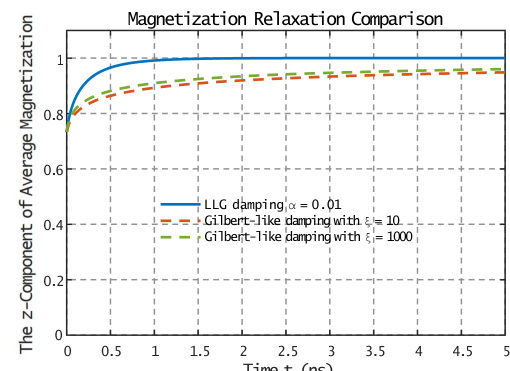
<figcaption class="paper-figure-caption"><b>Fig 1.</b> Figure 1. Time evolution of the z-component of the average magnetization for three different types of Gilbert damping: classical LLG damping with �= 0 . 0 1 , our nonlocal damping with �= 10 , and our nonlocal damping with �= 1000 .</figcaption>
</figure>
<figure class="paper-figure-card">
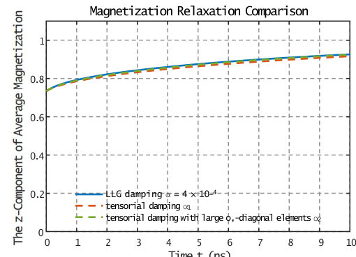
<figcaption class="paper-figure-caption"><b>Fig 2.</b> Figure 2. The time evolution of z-component of the average magnetic moment for three different types of Gilbert damping: the classical LLG damping with α = 4 × 10 −4, the damping with a tensorial coefficient α1 , the damping with a tensorial coefficient α2 .</figcaption>
</figure>
</div>

<p><strong>Summary.</strong> This work develops a microscopic framework to derive the quantum Landau-Lifshitz-Gilbert equation for magnetic damping in both ferromagnetic conductors and magnetic insulators. It demonstrates that the damping is not a universal scalar parameter but possesses a complex, tensorial structure dictated by the underlying physical interactions. This finding is vital for accurately modeling magnetization dynamics in nanoscale spintronic devices.</p>
<p><strong>Why it may be interesting.</strong> The derivation of damping from fundamental interactions (spin-phonon, s-d exchange) provides a microscopic, quantum-mechanical foundation for understanding energy dissipation in magnetic materials, which is crucial for open quantum system modeling.</p>
<details>
<summary>Detailed structure</summary>
<p><strong>Main problem.</strong> The paper addresses the need to understand the microscopic origin of magnetic damping, moving beyond simple phenomenological models.</p>
<p><strong>Main result.</strong> The damping mechanism is shown to be fundamentally tensorial and spatially dependent, differing significantly from conventional scalar Gilbert damping coefficients.</p>
<p><strong>Method.</strong> The authors derive the quantum Landau-Lifshitz-Gilbert equation using linear response theory for insulators and spin diffusion equations for conductors.</p>
<p><strong>Model / system.</strong> The study examines two distinct physical systems: ferromagnetic conductors (using s-d exchange interaction) and magnetic insulators (using spin-phonon interactions).</p>
<p><strong>Key observables.</strong> The Gilbert damping tensor ($\hat{\mathbf{B}}_{	ext{damping}}$), spin current ($\mathbf{J}_s$), and the time evolution of the magnetization component.</p>
<p><strong>Important parameters / regimes.</strong> Temperature (10K), coupling strengths ($\lambda$), and characteristic length scales (e.g., $80	ext{nm}$ simulation size).</p>
<p><strong>Assumptions / limitations.</strong> Approximations include linear response theory, the Markovian approximation for phonon relaxation, and neglecting higher-order spin deviation feedback.</p>
<p><strong>Figures summary.</strong> Figure 1 compares classical and nonlocal damping dynamics in conductors, while Figure 2 compares the time evolution of magnetization using different forms of damping (classical vs. tensorial) in insulators.</p>
<p><strong>Paper structure.</strong> The paper develops separate derivations for damping in conductors (via electron-magnon interaction) and insulators (via spin-phonon coupling), culminating in a comparison showing the tensorial nature of the damping in both cases.</p>
</details>
<details>
<summary>Abstract</summary>
<p>Understanding the microscopic origin of magnetic damping is essential for describing magnetization dynamics in nanoscale magnetic systems. In this work, we develop a microscopic framework to derive Gilbert damping terms from specific interactions in ferromagnetic conductors and magnetic insulators. In ferromagnetic conductors, magnetic damping is dominated by the s d exchange interaction between the localized magnetic moments and the itinerant electrons, which is effectively equivalent to an electronmagnon interaction. From the spin diffusion equation and the spin transfer torque therein, we obtain the corresponding quantum LLG equation. In magnetic insulators, where free electrons are absent, spin phonon interactions become the primary source of the damping.Starting from an effective spin phonon interaction and using linear response theory, we derive a quantum LLG equation with a Gilbert damping tensor analytically. Our results demonstrate that different microscopic interactions lead to qualitatively different structures of magnetic damping. Instead of being described by a universal scalar parameter, Gilbert damping can exhibit spatial dependence and tensorial characteristics determined by the underlying microscopic interactions.</p>
</details>
<p><sub><a href="#top">↑ back to top</a></sub></p>

<p><a id="paper-2610.31938"></a></p>
<h3 id="fidelity-dynamics-of-a-jaynes-cummings-qubit-under-markovian-and-non-markovian-coupling-noise"><a href="http://arxiv.org/abs/2610.31938v1">Fidelity Dynamics of a Jaynes--Cummings Qubit under Markovian and Non-Markovian Coupling Noise</a></h3>
<p><strong>Authors:</strong> Fang Wang, Da-Wei Luo, Ting Yu<br>
<strong>Type:</strong> theory · <strong>Category:</strong> other · <strong>PDF:</strong> <a href="https://arxiv.org/pdf/2610.31938v1">https://arxiv.org/pdf/2610.31938v1</a><br>
<strong>Analysis basis:</strong> full PDF text, analyzed in chunks
<strong>Topic relevance:</strong> <code>correlated / nonlocal dissipation</code> <strong>3/5</strong> · <code>analog quantum simulation</code> <strong>2/5</strong> · <code>methods for driven-dissipative</code> <strong>2/5</strong> · <code>Keldysh / 2PI / non-Gaussian methods</code> <strong>1/5</strong> · <code>Tavis-Cummings &amp; cavity-many-emitter</code> <strong>1/5</strong> · <code>driven-dissipative phase transition</code> <strong>1/5</strong></p>
<div class="figure-strip-hint">↔ Scroll figures horizontally</div>
<div class="paper-figures-scroll">
<figure class="paper-figure-card">
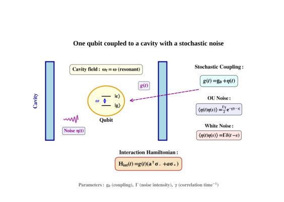
<figcaption class="paper-figure-caption"><b>Fig 1.</b> FIG. 1. Schematic diagram of a two-level qubit coupled to a single-mode cavity field with stochastic coupling fluctuations. The coupling strength g(t) = g0 + η(t) includes a constant term g0 and a stochastic noise term η(t), which can be mod- eled as either Ornstein-Uhlenbeck (OU) noise or white noise. The system is studied under the resonant condition ωf = ω, where the qubit transition frequency matches the cavity mode frequency.</figcaption>
</figure>
<figure class="paper-figure-card">
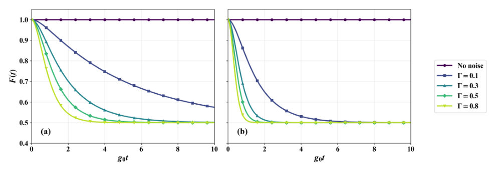
<figcaption class="paper-figure-caption"><b>Fig 2.</b> FIG. 2. Temporal evolution of fidelity F(t) for initial cavity photon numbers n = 0 [panel (a)] and n = 3 [panel (b)], with OU noise correlation rate γ = 2.0g0. Curves correspond to noise intensities: no noise (purple), Γ = 0.1 (blue), Γ = 0.3 (teal), Γ = 0.5 (green), and Γ = 0.8 (yellow-green). Higher noise intensities lead to faster fidelity decay, with both configurations exhibiting asymptotic plateaus at long times. The n = 3 case shows enhanced sensitivity to noise during the initial transient regime. The legend, shared between both panels, is shown on the right.</figcaption>
</figure>
<figure class="paper-figure-card">
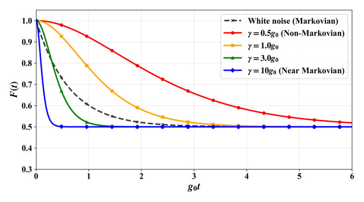
<figcaption class="paper-figure-caption"><b>Fig 3.</b> FIG. 3. Time evolution of fidelity F(t) for OU noise with varying correlation rates γ compared to white noise, for n = 1 and base noise intensity Γ0 = 0.4. To enable a fair comparison across regimes, the OU noise intensity is rescaled as Γ = Γ0γ, so that the effective noise strength Γ/γ is held constant across all curves. As γ increases from 0.5g0 (red, strongly non-Markovian) to 10g0 (blue, near Markovian), the dynamics transition toward white noise behavior (black dashed). The x-axis range is g0t ∈[0, 6].</figcaption>
</figure>
<figure class="paper-figure-card">
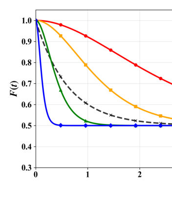
<figcaption class="paper-figure-caption"><b>Fig 4.</b> Figure 5 presents two-dimensional phase diagrams that map out the fidelity landscape and decoherence timescales as functions of both the noise intensity Γ and the correlation rate γ/g0. The left panel shows a fi- delity map at fixed time t = 4.0/g0 for photon number n = 1, while the right panel displays the decoherence time TD defined as the time required for fidelity to drop to F = 0.6. The fidelity map in panel (a) reveals several structural features. In the bottom region where γ/g0 ≲1 (non- Markovian regime), the fidelity is substantially higher</figcaption>
</figure>
<figure class="paper-figure-card">
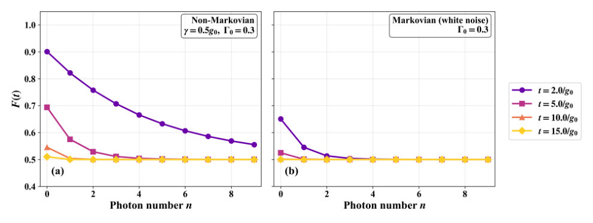
<figcaption class="paper-figure-caption"><b>Fig 5.</b> FIG. 4. Fidelity as a function of cavity photon number n at fixed observation times, comparing non-Markovian [panel (a)] and Markovian [panel (b)] dynamics. Panel (a): OU noise with γ = 0.5g0 and rescaled intensity Γ = Γ0γ = 0.15 (base Γ0 = 0.3). Panel (b): Markovian white noise with Γ0 = 0.3. Curves shown for t = 2.0/g0 (dark purple), t = 5.0/g0 (magenta), t = 10.0/g0 (orange-red), and t = 15.0/g0 (yellow). Fidelity decreases monotonically with photon number due to the (n + 1) scaling in the decoherence factor, with the steepest drop from n = 0 to n = 1.</figcaption>
</figure>
</div>

<p><strong>Summary.</strong> This theoretical study analyzes the fidelity decay of a JC qubit coupled to a cavity under fluctuating coupling noise. By comparing white noise (Markovian) to Ornstein-Uhlenbeck noise (non-Markovian), the authors demonstrate that memory effects in the noise significantly suppress decoherence. The results offer crucial insights for designing robust quantum protocols in cavity QED platforms.</p>
<p><strong>Why it may be interesting.</strong> This work provides a quantitative, analytical framework for understanding decoherence in cavity QED systems, specifically quantifying the advantage gained by correlated noise over simple Markovian noise models.</p>
<details>
<summary>Detailed structure</summary>
<p><strong>Main problem.</strong> The paper investigates how stochastic fluctuations in the qubit-cavity coupling affect the fidelity of quantum information transfer in a Jaynes-Cummings system.</p>
<p><strong>Main result.</strong> Non-Markovian noise (finite correlation time) significantly mitigates decoherence compared to white noise, leading to slower fidelity decay and longer coherence times.</p>
<p><strong>Method.</strong> The authors derive exact analytical expressions for the noise-averaged density matrix and fidelity by exploiting the closed dynamics within the relevant excitation manifold.</p>
<p><strong>Model / system.</strong> The system is a Jaynes-Cummings (JC) qubit coupled to a single-mode cavity. The coupling strength $g(t)$ is subjected to stochastic fluctuations, modeled by Ornstein-Uhlenbeck (OU) noise or Gaussian white noise.</p>
<p><strong>Key observables.</strong> Fidelity ($F(t)$), noise-averaged density matrix, and the decoherence factor $D(t)$.</p>
<p><strong>Important parameters / regimes.</strong> Noise correlation rate ($\gamma$), coherent coupling strength ($g_0$), and photon number ($n$).</p>
<p><strong>Assumptions / limitations.</strong> The analysis is performed in the resonant case ($\omega_f = \omega$) and exploits the closed dynamics within each excitation manifold.</p>
<p><strong>Figures summary.</strong> Figures illustrate fidelity evolution comparing OU noise at varying correlation rates ($\gamma$) against white noise, showing the non-Markovian advantage. They also compare fidelity vs. photon number ($n$) and map the decoherence time ($T_D$) in a phase diagram.</p>
<p><strong>Paper structure.</strong> The paper builds from the Hamiltonian formulation and noise modeling (OU vs. white noise) to deriving the noise-averaged density matrix. It then calculates the fidelity, establishing the dependence on the noise correlation function, and finally compares the decay rates across different noise regimes.</p>
</details>
<details>
<summary>Abstract</summary>
<p>We analytically investigate the fidelity dynamics of a Jaynes--Cummings qubit coupled to a single-mode cavity in the presence of stochastic fluctuations of the qubit--cavity coupling. Such fluctuations naturally arise in cavity- and circuit-QED platforms due to fabrication imperfections, control-field noise, mechanical vibrations, and environmental disturbances. Since the qubit--cavity coupling governs the rate of coherent energy and information exchange, understanding the effects of its fluctuations is essential for assessing the performance of quantum communication, quantum sensing, and quantum information-processing protocols. We consider both Gaussian white noise and Ornstein--Uhlenbeck noise with finite correlation time as models for the coupling fluctuations. Exploiting the closed dynamics within each excitation manifold, we derive exact analytical expressions for the noise-averaged density matrix and the fidelity relative to the ideal noiseless evolution. We show that the fidelity is determined by a single decoherence factor governed by the integrated noise correlation function, establishing a direct connection between microscopic coupling fluctuations and macroscopic coherence loss. In the white-noise limit, the fidelity decays exponentially, whereas finite noise correlation times produce nonexponential decay and slower coherence loss. We further show that the crossover between Markovian-like and non-Markovian regimes is controlled by the ratio of the noise correlation rate to the coherent coupling strength, and that decoherence increases with photon number because of the enhanced effective qubit--cavity coupling. These results provide a unified analytical framework for quantifying decoherence induced by stochastic coupling fluctuations and for evaluating the robustness of cavity-QED protocols under correlated noise.</p>
</details>
<p><sub><a href="#top">↑ back to top</a></sub></p>

<p><a id="paper-2610.32030"></a></p>
<h3 id="can-spontaneous-time-translation-symmetry-breaking-be-quantized-without-explicit-branches"><a href="http://arxiv.org/abs/2610.32030v1">Can Spontaneous Time-Translation Symmetry Breaking Be Quantized Without Explicit Branches?</a></h3>
<p><strong>Authors:</strong> Partha Nandi<br>
<strong>Type:</strong> theory · <strong>Category:</strong> other · <strong>PDF:</strong> <a href="https://arxiv.org/pdf/2610.32030v1">https://arxiv.org/pdf/2610.32030v1</a><br>
<strong>Analysis basis:</strong> full PDF text, analyzed in chunks
<strong>Topic relevance:</strong> <code>Keldysh / 2PI / non-Gaussian methods</code> <strong>3/5</strong> · <code>analog quantum simulation</code> <strong>2/5</strong> · <code>methods for driven-dissipative</code> <strong>2/5</strong> · <code>quantum measurements</code> <strong>2/5</strong></p>
<div class="figure-strip-hint">↔ Scroll figures horizontally</div>
<div class="paper-figures-scroll">
<figure class="paper-figure-card">
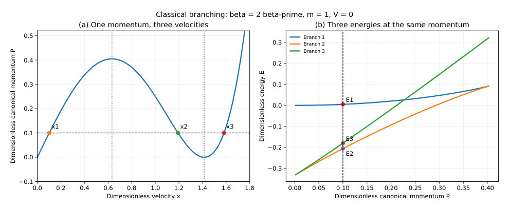
<figcaption class="paper-figure-caption"><b>Fig 1.</b> Figure 1. Origin of the branched Hamiltonian structure for the representative choice β = 2β′. In panel (a), a fixed canonical momentum pc y intersects the non-monotonic momentum–velocity relation at three distinct velocities ˙y1, ˙y2, ˙y3. Panel (b) shows the corresponding three Hamiltonian values at the same canonical momentum. The figure illustrates how the non-invertibility of the Legendre transformation gives rise to the branched Hamiltonian structure.</figcaption>
</figure>
<figure class="paper-figure-card">
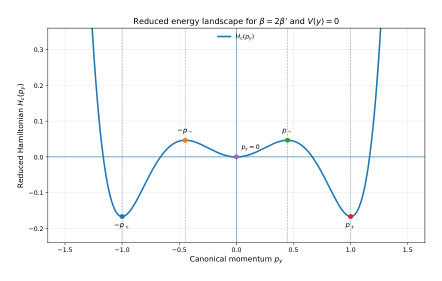
<figcaption class="paper-figure-caption"><b>Fig 2.</b> Figure 2. Reduced energy Hc(py) for the representative choice β = 2β′, with V (y) = 0. The outer minima at py = ±p+ cor- respond to the finite-velocity minimum-energy configurations, while the inner stationary points py = ±p−are local maxima, where p2 −= 2/(5β) and p2 + = 2/β.</figcaption>
</figure>
<figure class="paper-figure-card">
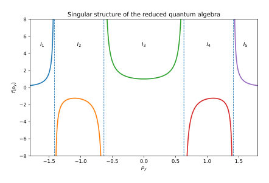
<figcaption class="paper-figure-caption"><b>Fig 3.</b> Figure 3. Momentum dependence of the reduced deforma- tion function f(py) for the representative choice β = 2β′. The divergences at py = ±p± occur at the critical points of the classical momentum–velocity relation, where the re- duced symplectic structure becomes degenerate. The outer singularities ±p+ coincide with the finite-momentum classi- cal ground-state configurations associated with spontaneous time-translation symmetry breaking.</figcaption>
</figure>
</div>

<p><strong>Summary.</strong> This paper tackles the difficult problem of quantizing systems where the classical dynamics are branched due to spontaneous symmetry breaking. It uses a reduced phase-space approach to encode the branching structure into a singular symplectic geometry. The resulting quantum theory predicts specific momentum sectors and suggests connections to k-essence, though the equivalence to full branch quantization remains an open question.</p>
<p><strong>Why it may be interesting.</strong> While the focus is on general field theory and gravity (hep-th, gr-qc), the methodology of analyzing reduced phase spaces and singular geometries is highly relevant to understanding effective Hamiltonians in complex quantum systems, including those studied in AMO physics.</p>
<details>
<summary>Detailed structure</summary>
<p><strong>Main problem.</strong> The central problem is quantizing classical dynamics associated with spontaneous time-translation symmetry breaking when the underlying Hamiltonian is multivalued (branched), without explicitly tracking these classical branches.</p>
<p><strong>Main result.</strong> The reduced quantum description yields a deformed position-momentum commutator, identifying distinct momentum sectors, and suggesting a possible connection to k-essence field theories.</p>
<p><strong>Method.</strong> The authors employ a reduced phase-space formulation, encoding the classical branching structure into a singular, momentum-dependent symplectic geometry, and then quantizing the resulting reduced Poisson algebra.</p>
<p><strong>Model / system.</strong> The analysis focuses on higher-order velocity-dependent systems whose Lagrangians lead to non-convex kinetic energy terms, causing the canonical momentum-velocity relation to be non-invertible and the Hamiltonian to be branched.</p>
<p><strong>Key observables.</strong> Deformed position-momentum commutator, position uncertainty bounds, and the identification of bounded central and unbounded outer momentum sectors.</p>
<p><strong>Important parameters / regimes.</strong> The singularity structure of the reduced symplectic geometry, and the parameters governing the non-convexity of the kinetic term (e.g., $\alpha, \gamma$ in the representative model).</p>
<p><strong>Assumptions / limitations.</strong> The primary assumption is that a reduced phase-space formulation can capture the essential physics, although the authors note that spectral equivalence with branch-matching quantization is not proven.</p>
<p><strong>Figures summary.</strong> Figures illustrate the origin of the branched Hamiltonian structure (multiple velocities for one momentum) and show the reduced energy landscape, highlighting outer minima corresponding to finite-velocity ground states.</p>
<p><strong>Paper structure.</strong> The paper proceeds by introducing the model (Sec. II), quantizing the reduced algebra (Sec. III), and discussing field-theoretic connections (Sec. IV).</p>
</details>
<details>
<summary>Abstract</summary>
<p>Can classically branched dynamics associated with spontaneous time-translation-symmetry breaking be quantized without explicitly retaining the branches of the Hamiltonian? We investigate this question using a reduced phase space. formulation in which the Hamiltonian is single-valued, while the critical structure of the classical Legendre map is encoded in a singular, momentum-dependent symplectic geometry. Quantization of the reduced Poisson algebra yields a deformed position-momentum commutator whose singularities determine distinct regular momentum sectors. Using the positive measure induced by the reduced symplectic structure, we identify a bounded central sector and two unbounded outer sectors. In the central sector, states with vanishing mean momentum obey a nonzero lower bound on position uncertainty, subject to the operator-domain assumptions of the representation. We further identify a possible field-theoretic connection with k-essence, where nonlinear scalar-field kinetics can produce finite-velocity degeneracies of the Legendre map. The relationship between the resulting reduced quantum description and branch-matching quantization remains unresolved and requires a comparison of the corresponding Hilbert spaces and operator domains.</p>
</details>
<p><sub><a href="#top">↑ back to top</a></sub></p>

<p><a id="paper-2610.32368"></a></p>
<h3 id="quantum-theory-of-laser-noise-in-coherent-scattering-levitated-optomechanics"><a href="http://arxiv.org/abs/2610.32368v1">Quantum theory of laser noise in coherent-scattering levitated optomechanics</a></h3>
<p><strong>Authors:</strong> Davide Candoli, Andreu Riera-Campeny, Lorenzo Dania, Oscar Schmitt Kremer, Johannes Piotrowski, Jayadev Vijayan, Lukas Novotny, Martin Frimmer, Oriol Romero-Isart, Carlos Gonzalez-Ballestero<br>
<strong>Type:</strong> theory · <strong>Category:</strong> other · <strong>PDF:</strong> <a href="https://arxiv.org/pdf/2610.32368v1">https://arxiv.org/pdf/2610.32368v1</a><br>
<strong>Analysis basis:</strong> full PDF text, analyzed in chunks
<strong>Topic relevance:</strong> <code>quantum measurements</code> <strong>3/5</strong> · <code>Keldysh / 2PI / non-Gaussian methods</code> <strong>2/5</strong> · <code>methods for driven-dissipative</code> <strong>2/5</strong> · <code>correlated / nonlocal dissipation</code> <strong>1/5</strong> · <code>driven-dissipative phase transition</code> <strong>1/5</strong></p>
<div class="figure-strip-hint">↔ Scroll figures horizontally</div>
<div class="paper-figures-scroll">
<figure class="paper-figure-card">
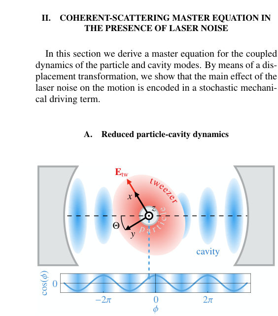
<figcaption class="paper-figure-caption"><b>Fig 1.</b> Figure 1. Sketch of the system. A dielectric nanoparticle (light gray) is trapped by an optical tweezer (red) within the field of a Fabry–P´erot cavity (blue). The origin of coordinates coincides with the focus of the tweezer, which propagates in the z direction and is linearly polarized along x. The cavity axis forms an angle Θ with the y axis at the origin. The intensity of the cavity field at the particle’s position is encoded in the phase ϕ, with ϕ = 0 being an antinode and ϕ = π/2 a node.</figcaption>
</figure>
<figure class="paper-figure-card">
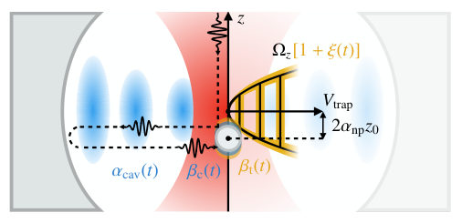
<figcaption class="paper-figure-caption"><b>Fig 2.</b> Figure 2. Noisy mechanical driving induced by laser noise in a coherent scattering setup. We illustrate the two driving mechanisms in the particular case of the center-of-mass motion along z. Tweezer photons scattered off the particle transfer noise to the amplitude and phase of the cavity mode, encoded in the noisy displacement αcav(t). In turn, the fluctuations of the cavity field couple to the particle and drive its motion at a rate βc(t) (blue). On the other hand, the radiation- pressure forces exerted by the cavity and tweezer fields displace the particle by an average distance 2αnpz0 away from the trap center, where z0 is the zero-point length of the motion along z. At this posi-...</figcaption>
</figure>
<figure class="paper-figure-card">
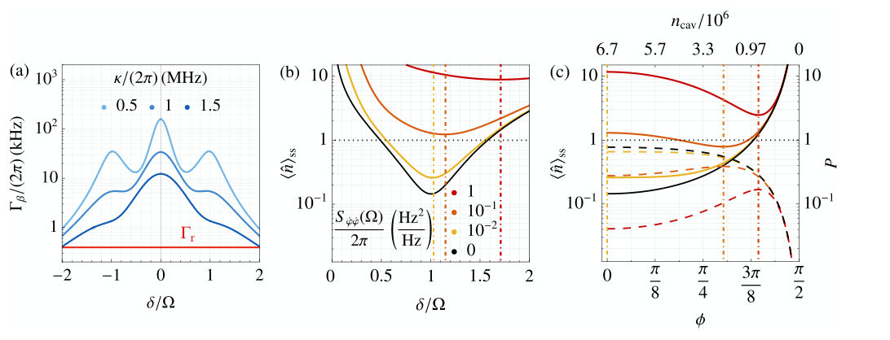
<figcaption class="paper-figure-caption"><b>Fig 3.</b> Figure 3. Effect of the laser phase noise on the librational dynamics. (a) Phase-noise heating rate (blue) as a function of the cavity detuning for different values of the cavity linewidth. For reference, we plot in red the value of the recoil heating rate. Here, σ˙φ = 2π Hz2/Hz, Ω= 2π×1.05 MHz and ϕ = 0. (b) Steady-state librational phonon number (solid) as a function of detuning and for different frequency-noise PSDs. The vertical dot-dashed lines mark the values of detuning for optimal cooling. The horizontal dotted line marks the ground state threshold ⟨ˆn⟩ss = 1. The phonon number expected in the absence of laser noise is plotted in black. Here, κ = 2π × 0.5 MHz and ϕ = 0. (c)...</figcaption>
</figure>
<figure class="paper-figure-card">
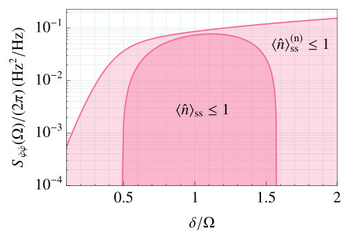
<figcaption class="paper-figure-caption"><b>Fig 4.</b> Figure 4. Laser frequency noise PSD required to achieve conditions ⟨ˆn⟩(n) ss ≤1 (light pink) and ⟨ˆn⟩ss ≤1 (dark pink) as a function of the cavity detuning. Here, σξ = 0, ϕ = 0, κ = 2π × 0.5 MHz and Ω= 2π × 1.05 MHz.</figcaption>
</figure>
<figure class="paper-figure-card">
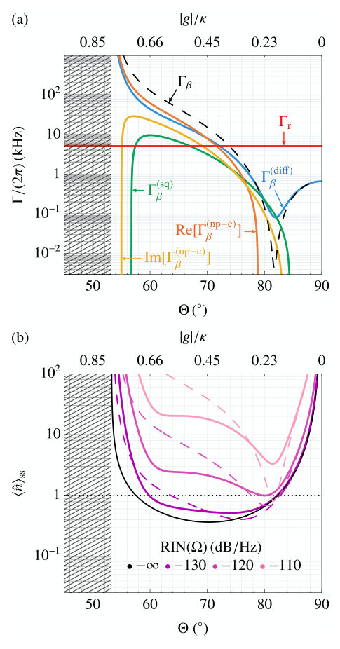
<figcaption class="paper-figure-caption"><b>Fig 5.</b> Figure 6. (a) Laser-noise-induced decoherence rates, according to the strong and weak-coupling models, as a function of the po- larization angle Θ. The colored plots are the decoherence rates of the strong-coupling master equation (29), respectively Γ = Γ(diff) β (blue), Γ(sq) β (green), Re[Γ(np−c) β ] (orange), Im[Γ(np−c) β ] (yellow) and Γr (red). The black dashed line is the laser-noise rate Γβ of the weak- coupling master equation (15). The top axis shows the absolute value of the optomechanical coupling over the cavity linewidth (note that the scale is not linear). The hatched region marks the unstable regime where the phonon number does not converge to a steady-state value. Here,...</figcaption>
</figure>
</div>

<p><strong>Summary.</strong> This paper presents a quantum theory analyzing how laser noise limits the cooling and state purity of levitated nanoparticles in optomechanical cavities. By deriving a master equation incorporating laser amplitude and phase noise, the authors provide quantitative tools to optimize experimental performance. This advances the field by offering a comprehensive model for preparing quantum states with massive mechanical objects.</p>
<p><strong>Why it may be interesting.</strong> This work is highly relevant to AMO physics and quantum optics as it provides a rigorous theoretical framework for quantifying decoherence sources (laser noise) in state-of-the-art quantum mechanical experiments involving macroscopic quantum systems.</p>
<details>
<summary>Detailed structure</summary>
<p><strong>Main problem.</strong> The primary goal is to develop a quantum theory to quantify and optimize the state purity of levitated nanoparticles cooled via coherent scattering, specifically addressing performance limitations imposed by classical laser field fluctuations.</p>
<p><strong>Main result.</strong> The authors derive a master equation describing the particle dynamics under laser noise, providing a 'toolbox' to calculate laser-noise-induced heating rates and excess phonon numbers in both weak and strong optomechanical coupling regimes.</p>
<p><strong>Method.</strong> The analysis employs the Time-Convolutionless (TCL) master equation formalism, utilizing displacement transformations and applying weak-noise approximations to derive rate equations for the system's evolution.</p>
<p><strong>Model / system.</strong> The system is a dielectric nanoparticle undergoing roto-translational motion, cooled by coherent scattering within a Fabry-Pérot cavity. The model incorporates the particle-cavity Hamiltonian and treats laser amplitude and phase noise as stochastic Ornstein-Uhlenbeck processes.</p>
<p><strong>Key observables.</strong> State purity, laser-noise-induced heating rates, excess phonon number, average cavity photon number, and particle displacement.</p>
<p><strong>Important parameters / regimes.</strong> Weak and strong optomechanical coupling regimes, finite correlation times of laser noise, and the noise spectral density $S_{
u
u}(\omega)$.</p>
<p><strong>Assumptions / limitations.</strong> The theory assumes laser noise processes have finite correlation times, and approximations are made in the weak-noise limit and the long-time limit ($t 	o \infty$) when using the TCL formalism.</p>
<p><strong>Figures summary.</strong> Figure 1 sketches the physical setup: a dielectric nanoparticle trapped by an optical tweezer inside a Fabry-Pérot cavity, defining the system coordinates and phase encoding.</p>
<p><strong>Paper structure.</strong> The paper builds the theory by first defining the system Hamiltonian and noise sources. It then analyzes the dynamics using the TCL formalism, deriving separate treatments for the weak-coupling and strong-coupling regimes, culminating in the final noise-averaged master equation.</p>
</details>
<details>
<summary>Abstract</summary>
<p>State purity is a key resource for experimental tests of quantum mechanics with massive objects. Cavity cooling of a levitated nanoparticle via coherent scattering stands out as a strategy to prepare highly pure states of its roto-translational motion. In several cases, though, the performance of cooling by coherent scattering is limited by the classical fluctuations of the laser field. Here we present a quantum theory of coherent-scattering experiments which includes the effect of the laser amplitude and phase noise. We derive a master equation for the noise-averaged particle's dynamics, valid for both center-of-mass and rotational degrees of freedom, and quantify the cooling performance for different levels of noise in state-of-the-art experiments. We compute approximate analytical expressions for the laser-noise-induced heating rates and excess phonon number in both regimes of weak and strong optomechanical coupling. Moreover, our model can be applied to laser noise processes with generic power spectral densities and finite correlation times. This work offers a toolbox to quantify and optimize the state purity in coherent-scattering experiments, and opens new avenues towards the preparation of quantum states with levitated systems.</p>
</details>
<p><sub><a href="#top">↑ back to top</a></sub></p>

<p><a id="paper-2610.32297"></a></p>
<h3 id="banded-chaos-and-time-semicrystalline-order"><a href="http://arxiv.org/abs/2610.32297v1">Banded Chaos and Time-Semicrystalline Order</a></h3>
<p><strong>Authors:</strong> Matteo Baggioli<br>
<strong>Type:</strong> theory · <strong>Category:</strong> statistical mechanics · <strong>PDF:</strong> <a href="https://arxiv.org/pdf/2610.32297v1">https://arxiv.org/pdf/2610.32297v1</a><br>
<strong>Analysis basis:</strong> full PDF text, analyzed in chunks
<strong>Topic relevance:</strong> <code>driven-dissipative phase transition</code> <strong>3/5</strong> · <code>non-equilibrium universality</code> <strong>3/5</strong> · <code>Frenkel-Kontorova</code> <strong>1/5</strong> · <code>methods for driven-dissipative</code> <strong>1/5</strong></p>
<div class="figure-strip-hint">↔ Scroll figures horizontally</div>
<div class="paper-figures-scroll">
<figure class="paper-figure-card">
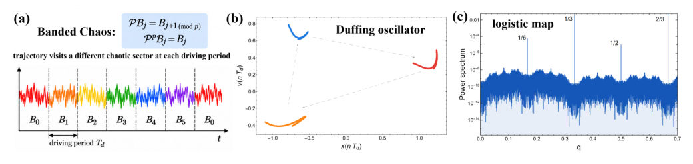
<figcaption class="paper-figure-caption"><b>Fig 1.</b> FIG. 1. Banded chaos as temporal order within chaos. (a) Schematic representation of a p-band chaotic attractor. The stroboscopic map P cyclically permutes the chaotic bands, PBj = Bj+1 (mod p), so that a trajectory returns to the same band only after p driving periods, PpBj = Bj. Despite the irregular dynamics within each band, the band index retains an exact finite temporal order. (b) Stroboscopic Poincar´e section of the driven Duffing oscillator for α = −1, β = 1, γ = 0.30, F = 0.58, and ωd = 1.36, sampled once per driving period Td = 2π/ωd. The three colors identify the three cyclically visited chaotic bands. The trajectory was initialized at (x0, ˙x0) = (1, 0); transients were...</figcaption>
</figure>
<figure class="paper-figure-card">
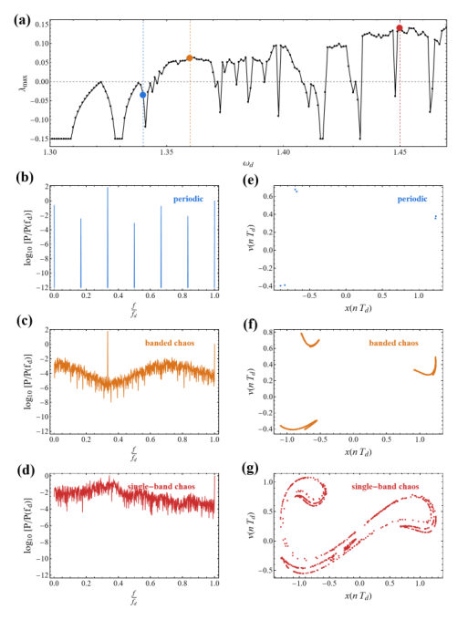
<figcaption class="paper-figure-caption"><b>Fig 2.</b> FIG. 2. Representative periodic, banded-chaotic, and single-band chaotic dynamics in the driven Duff- ing oscillator. The driving frequency ωd is varied at fixed α = −1, β = 1, γ = 0.30, and F = 0.58, with initial condition (x0, ˙x0) = (1, 0). (a) Largest Lyapunov exponent λmax of the attractor reached from the initial condition (x0, ˙x0) = (1, 0), as a function of ωd. The dependence on driving frequency is nonmonotonic and contains periodic windows and re-entrant chaotic intervals. The three colored symbols mark represen- tative attractors at ωd = 1.34, 1.36, and 1.45; the vertical dashed lines are guides to these examples and do not denote phase boundaries. (b)–(d) Corresponding...</figcaption>
</figure>
<figure class="paper-figure-card">
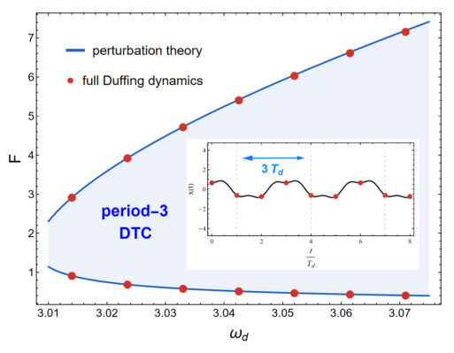
<figcaption class="paper-figure-caption"><b>Fig 3.</b> FIG. 3. Birth of period-three temporal order from nonlinear resonance. The shaded region shows the 1:3 resonance tongue of the Duffing oscillator, i.e., the region where Eq. (24) admits a real subharmonic amplitude a ̸= 0. Solid blue curves are the perturbative saddle-node boundaries F±(ωd) of Eq. (25), while red symbols are obtained from the full nonlinear dynamics. Below the lower boundary F−, the drive is too weak for the resonant mixing to overcome damp- ing; above the upper boundary F+, the strong forced response shifts the effective oscillator frequency away from ωd/3 and the resonance is lost. Inside the tongue, a stable period-three branch coexists with an unstable partner; the two...</figcaption>
</figure>
<figure class="paper-figure-card">

<figcaption class="paper-figure-caption"><b>Fig 4.</b> Figure 3 provides a direct test of this perturbative pre- diction. The solid blue curves are the analytical bound- aries F±(ωd) from Eq. (25), while the red symbols are the corresponding saddle-node points obtained from the full Duffing dynamics. Their close agreement demon- strates that the emergence of period-three temporal or- der is quantitatively captured by the weakly nonlinear theory. The inset shows a representative trajectory in- side the resonance tongue: although the system is driven with period Td, the stroboscopic sequence returns to itself only after 3Td. The saddle-node mechanism is not peculiar to the weakly nonlinear example. Continuing the period-three branch used in Fig....</figcaption>
</figure>
<figure class="paper-figure-card">
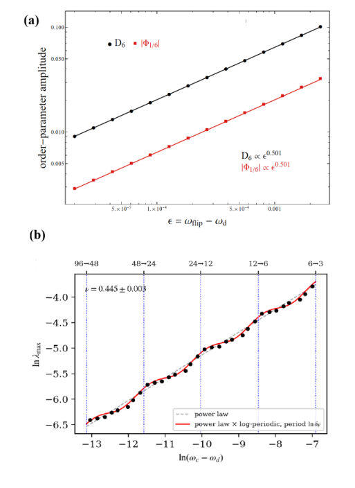
<figcaption class="paper-figure-caption"><b>Fig 5.</b> FIG. 4. From periodic order to banded chaos through the Feigenbaum cascade. (a) Scaling at the first flip bi- furcation 3 →6. The orbit splitting D6 and the emergent subharmonic amplitude |Φ1/6| both vanish as ϵ1/2, with fitted exponents 0.501, in agreement with the square-root scaling of a supercritical flip bifurcation. (b) Lyapunov scaling and log- periodic fine structure on the chaotic side of the accumulation point, ωc ≃1.434984. Black symbols show ln λmax obtained from a dense scan of 1000 values of ωd and averaged in 32 bins. The gray dashed line is a pure power law, while the red line is Eq. (33) with the log-period fixed to the Feigenbaum value ∆log = ln δF ≃1.541, yielding ν =...</figcaption>
</figure>
</div>

<p><strong>Summary.</strong> This paper reinterprets the concept of time-semicrystalline order—where subharmonic periodicity coexists with chaos—using classical nonlinear dynamics. It demonstrates that this phenomenon arises naturally from 'banded chaos,' where the stroboscopic evolution cyclically permutes distinct chaotic sectors. The work provides a robust, low-dimensional framework connecting temporal order to universal scaling laws observed in standard nonlinear systems.</p>
<p><strong>Why it may be interesting.</strong> The connection drawn between time-semicrystalline order and established structures in dissipative nonlinear dynamics (like Feigenbaum scaling and crisis phenomena) provides a general, low-dimensional framework for understanding temporal organization in complex, non-equilibrium systems relevant to AMO physics.</p>
<details>
<summary>Detailed structure</summary>
<p><strong>Main problem.</strong> The paper investigates the theoretical mechanism underlying the coexistence of deterministic chaos and discrete temporal order, known as time-semicrystalline order.</p>
<p><strong>Main result.</strong> This time-semicrystalline phenomenology is shown to have a natural interpretation in classical nonlinear dynamics via the concept of 'banded chaos,' where the chaotic attractor is composed of cyclically permuted subsets.</p>
<p><strong>Method.</strong> The analysis relies on stroboscopic mapping of the system's evolution, decomposing the resulting chaotic attractor into cyclically permuted bands, and analyzing bifurcations like period-doubling and band-merging crises.</p>
<p><strong>Model / system.</strong> The study uses low-dimensional, periodically driven nonlinear systems as minimal models, specifically the driven Duffing oscillator and the logistic map, to explore the underlying dynamical principles.</p>
<p><strong>Key observables.</strong> Stroboscopic spectrum decomposition (pure-point vs. continuous), Maximal Lyapunov exponent ($\lambda_{\max}$), Coherent component ($\Phi_q[O]$), and geometric scaling parameters related to bifurcations.</p>
<p><strong>Important parameters / regimes.</strong> Driving frequency ($\omega_d$), nonlinearity parameters ($\alpha, eta$), and bifurcation parameters ($r$ for the logistic map).</p>
<p><strong>Assumptions / limitations.</strong> The analysis assumes that the time-semicrystal structure can be captured by analyzing the stroboscopic map, and that the low-dimensional models provide the essential dynamical mechanism.</p>
<p><strong>Figures summary.</strong> Figures illustrate the decomposition of the chaotic stroboscopic attractor into cyclically permuted bands, and show the progression through different dynamical regimes, including band-merging crises and attractor-merging crises.</p>
<p><strong>Paper structure.</strong> The paper builds the case by first defining the time-semicrystal concept, then demonstrating its realization in low-dimensional models (Duffing/logistic map) using stroboscopic analysis, and finally exploring the transitions between ordered and chaotic states via bifurcation analysis.</p>
</details>
<details>
<summary>Abstract</summary>
<p>Recent work has introduced the notion of a time semicrystal, a driven nonequilibrium regime in which subharmonic temporal order survives inside deterministic chaos. Here we revisit this phenomenology from the viewpoint of classical nonlinear dynamics. Banded chaotic attractors consist of a finite number of chaotic sectors cyclically permuted by stroboscopic evolution, allowing discrete subharmonic spectral components to coexist with a broadband chaotic continuum. Exemplified through the driven Duffing oscillator and the logistic map, this structure naturally reproduces the characteristic signatures of time-semicrystalline dynamics. Within this framework, periodic subharmonic motion can enter chaos through the familiar period-doubling cascade while retaining a well-defined temporal skeleton governed by the universal Feigenbaum scaling. Temporal order within chaos can also reorganize or collapse through distinct mechanisms, producing continuous or abrupt transitions that may be intertwined with symmetry changes. These results connect time-semicrystal phenomenology with established structures of dissipative nonlinear dynamics, showing that its essential ingredients already arise in standard nonlinear systems and providing a simple framework for extending and testing the paradigm in more complex, many-body, and experimental settings.</p>
</details>
<p><sub><a href="#top">↑ back to top</a></sub></p>

<p><a id="paper-2610.32227"></a></p>
<h3 id="performing-a-quantum-subroutine-using-cluster-states"><a href="http://arxiv.org/abs/2610.32227v1">Performing a Quantum Subroutine Using Cluster States</a></h3>
<p><strong>Authors:</strong> Sakibul Islam Rayhan, Karima Hassan, Md Rasedujjaman, Md Mohsinur Rahman Adnan<br>
<strong>Type:</strong> theory · <strong>Category:</strong> quantum information and computing · <strong>PDF:</strong> <a href="https://arxiv.org/pdf/2610.32227v1">https://arxiv.org/pdf/2610.32227v1</a><br>
<strong>Analysis basis:</strong> full PDF text, analyzed in chunks
<strong>Topic relevance:</strong> <code>analog quantum simulation</code> <strong>3/5</strong> · <code>quantum measurements</code> <strong>3/5</strong> · <code>methods for driven-dissipative</code> <strong>2/5</strong></p>
<div class="figure-strip-hint">↔ Scroll figures horizontally</div>
<div class="paper-figures-scroll">
<figure class="paper-figure-card">
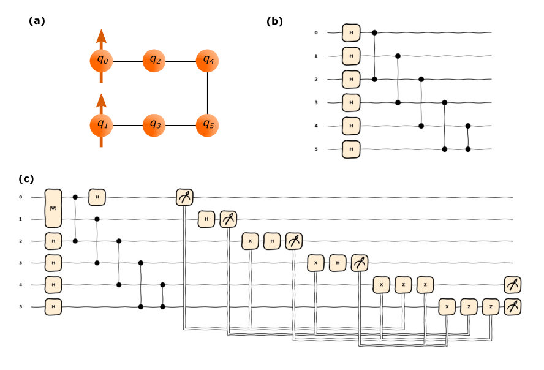
<figcaption class="paper-figure-caption"><b>Fig 1.</b> Figure 1: Illustration of cluster states for the controlled-Z (CZ) gate like functionality: (a) schematic representation of the CZ cluster state with six qubit arranged in 2 × 3 grid where q0, q1 is the input qubit and q4, q5 is the output qubit (b) Quantum circuit construction for generating an 6-qubit cluster state. Each qubit is first initialized in the |+⟩state by applying a Hadamard gate to |0⟩. Controlled-Z (CZ) gates are then applied sequentially between neighboring qubits to entangle them. (c) Realization of the complete CZ-gate cluster state MBQC circuit. The input qubits q0 and q1 are initialized in the XY (0) plane, while the remaining qubits follow the prescribed measurement...</figcaption>
</figure>
<figure class="paper-figure-card">
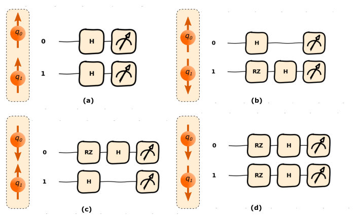
<figcaption class="paper-figure-caption"><b>Fig 2.</b> Figure 2: Oracle construction based on input qubits q0 and q1, with rotations defined in the XY plane: (a) choosing XY (0) plane for both q0 and q1 to implement a phase shift on state |11⟩; (b) choosing XY (0) and XY (π) for q0 and q1 to implement a phase shift on |10⟩; (c) choosing XY (π) and XY (0) for q0 and q1 to implement a phase shift on |01⟩; (d) choosing XY (π) plane for both q0 and q1 to implement a phase shift on |00⟩.</figcaption>
</figure>
<figure class="paper-figure-card">
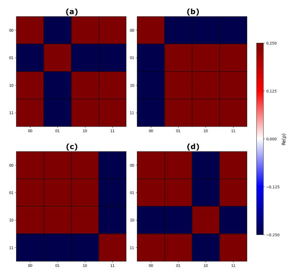
<figcaption class="paper-figure-caption"><b>Fig 3.</b> Figure 3: Density matrix verification for the initial state |+⟩⊗|−⟩, with outcomes shown for different measurement- based quantum computation (MBQC) oracles. The real part of the amplitude is displayed, with maximum values of 0.25 and −0.25: (a) density matrix corresponding to the |11⟩marked oracle; (b) density matrix corresponding to the |10⟩marked oracle; (c) density matrix corresponding to the |01⟩marked oracle; (d) density matrix corresponding to the |00⟩marked oracle.</figcaption>
</figure>
<figure class="paper-figure-card">
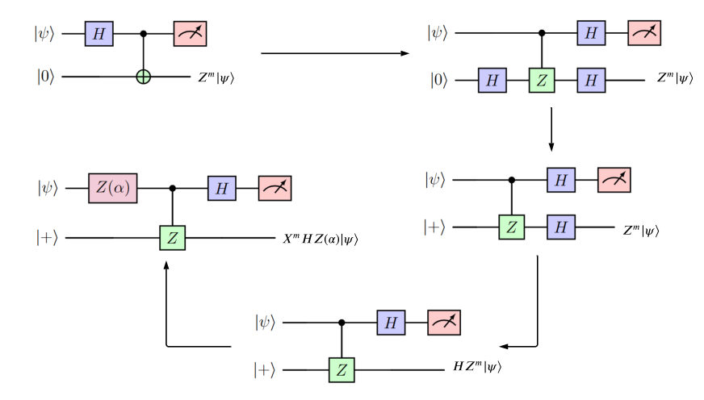
<figcaption class="paper-figure-caption"><b>Fig 4.</b> Figure 4: Derivation of measurement based correction patterns from elementary quantum circuits, illustrating how measurement outcomes in rotated bases lead to Pauli byproduct operators and adaptive corrections in MBQC.</figcaption>
</figure>
<figure class="paper-figure-card">
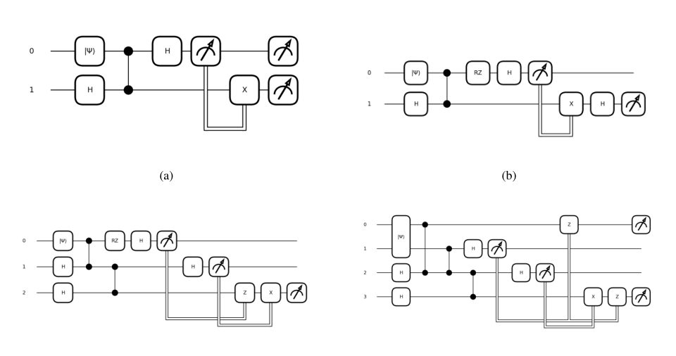
<figcaption class="paper-figure-caption"><b>Fig 5.</b> Figure 5: Measurement-based quantum computation (MBQC) gate constructions: (a) Hadamard gate implemented using a two-qubit linear cluster; (b) single-qubit state transfer and rotation via a two-qubit cluster; (c) measurement-based realization of the RZ(θ) gate using a three-qubit cluster; (d) CNOT-equivalent entangling gate implemented with a multi-qubit cluster. Logical operations are achieved through single-qubit measurements and classical feedforward, with deterministic behavior up to Pauli byproduct operators.</figcaption>
</figure>
</div>

<p><strong>Summary.</strong> This paper rigorously demonstrates how to implement a quantum phase oracle, a fundamental subroutine, using Measurement-Based Quantum Computation (MBQC). It achieves this by defining precise measurement patterns on highly entangled cluster states, providing a transparent, verifiable alternative to traditional gate-based circuit descriptions.</p>
<p><strong>Why it may be interesting.</strong> For AMO/open quantum systems, this work provides a theoretical blueprint for simulating complex quantum circuits using resource states, which is relevant for understanding noise accumulation and measurement-induced dynamics in physical platforms.</p>
<details>
<summary>Detailed structure</summary>
<p><strong>Main problem.</strong> The paper focuses on implementing the phase oracle, a crucial quantum subroutine, within the Measurement-Based Quantum Computation (MBQC) framework.</p>
<p><strong>Main result.</strong> The authors successfully demonstrated that the required oracle transformation can be realized by defining an explicit measurement pattern on a highly entangled cluster state, showing operational equivalence to gate-based methods.</p>
<p><strong>Method.</strong> The implementation involves constructing specific cluster states (graph states) and then simulating the state evolution using density matrices while performing adaptive measurements according to the required pattern.</p>
<p><strong>Model / system.</strong> The core model is Measurement-Based Quantum Computation (MBQC), which utilizes highly entangled resource states called cluster states. The computation proceeds via adaptive single-qubit measurements on these states.</p>
<p><strong>Key observables.</strong> Output density matrices (rho'out) are key observables, used to verify that the state transformation matches the expected result from a gate-based model.</p>
<p><strong>Important parameters / regimes.</strong> The complexity scales with the size of the cluster state and the required subroutine (e.g., two-qubit Grover's oracle).</p>
<p><strong>Assumptions / limitations.</strong> The approach assumes that non-determinism arising from measurements can be fully characterized and corrected via classical feedforward based on measurement outcomes.</p>
<p><strong>Figures summary.</strong> Figures illustrate the construction of cluster states for specific gates (like CZ), show the resulting MBQC measurement circuits, and display the real parts of density matrices confirming the oracle action on different basis states.</p>
<p><strong>Paper structure.</strong> The paper progresses by first defining the resource state (cluster state), then detailing the mechanism for implementing a specific subroutine (the phase oracle) through measurement patterns, and finally verifying the result using density matrix simulations against established gate-based benchmarks.</p>
</details>
<details>
<summary>Abstract</summary>
<p>Quantum subroutines, like their classical counterparts, serve as essential components of larger algorithms. They can be realized using gate based architectures or measurement based quantum computation (MBQC), where computation proceeds through adaptive measurements on highly entangled cluster states. In this work, we implement a phase oracle as a reusable subroutine within the MBQC framework using experimentally feasible cluster states. Unlike prior demonstrations of Grover's algorithm in MBQC that omit explicit oracle construction, our approach provides a transparent formulation of the oracle subroutine, including its measurement patterns, byproduct correlations, density-matrix simulations, and corresponding MBQC measurement circuits.</p>
</details>
<p><sub><a href="#top">↑ back to top</a></sub></p>

<p><a id="paper-2610.32156"></a></p>
<h3 id="quantum-evolution-networks-learn-long-time-coherent-dynamics-in-driven-spin-registers"><a href="http://arxiv.org/abs/2610.32156v1">Quantum Evolution Networks Learn Long-Time Coherent Dynamics in Driven Spin Registers</a></h3>
<p><strong>Authors:</strong> Puran Li, Condon Lau, Xiu-Hao Deng<br>
<strong>Type:</strong> theory · <strong>Category:</strong> quantum information and computing · <strong>PDF:</strong> <a href="https://arxiv.org/pdf/2610.32156v1">https://arxiv.org/pdf/2610.32156v1</a><br>
<strong>Analysis basis:</strong> full PDF text, analyzed in chunks
<strong>Topic relevance:</strong> <code>methods for driven-dissipative</code> <strong>3/5</strong> · <code>analog quantum simulation</code> <strong>2/5</strong> · <code>driven-dissipative phase transition</code> <strong>2/5</strong> · <code>non-equilibrium universality</code> <strong>1/5</strong></p>
<div class="figure-strip-hint">↔ Scroll figures horizontally</div>
<div class="paper-figures-scroll">
<figure class="paper-figure-card">
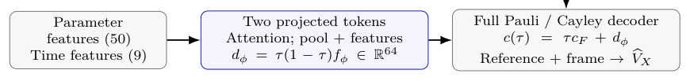
<figcaption class="paper-figure-caption"><b>Fig 1.</b> FIG. 1. Structure-constrained learning of a propagator family. (a) Shared weights map physical parameters to a one-period propagator and a within-period path; periodic composition produces the queried operator. (b) Longitudinal driving uses block coordinates and a harmonic residual loop. (c) Transverse driving uses a residual MLP and three full-space Cayley factors for the endpoint, together with a parameter–time path network. Blue modules are trained; gray modules are prescribed transformations. Reference endpoint coordinates define path supervision, and predicted endpoint coordinates enter the path decoder at inference. This interface supports the component replacements in Sec. VI C.</figcaption>
</figure>
<figure class="paper-figure-card">
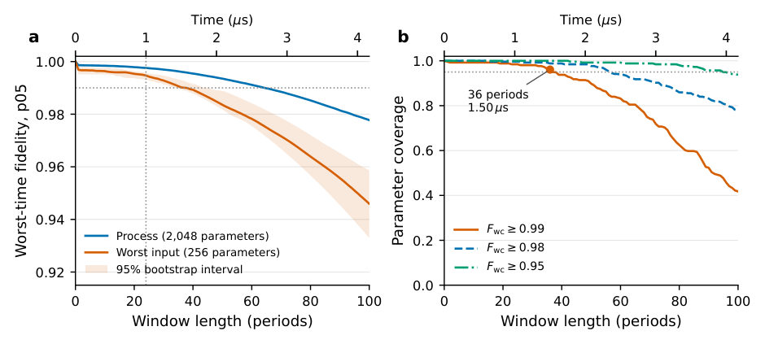
<figcaption class="paper-figure-caption"><b>Fig 2.</b> FIG. 2. Empirical reliability windows under transverse driving. (a) Fifth-percentile worst-time process fidelity on 2,048 held-out parameters and worst-input fidelity on a 256-member subset. The shadow is a pointwise 95% parameter-bootstrap interval for the worst-input p05. Dotted lines mark 24TX and fidelity 0.99. (b) Fractions of the spectral subset exceeding three worst-input fidelity thresholds throughout each evaluated window. At threshold 0.99 and coverage 95%, the last passing window is 36TX = 1.50 µs. These windows use the parameter samples and time grids specified in Sec. III.</figcaption>
</figure>
<figure class="paper-figure-card">
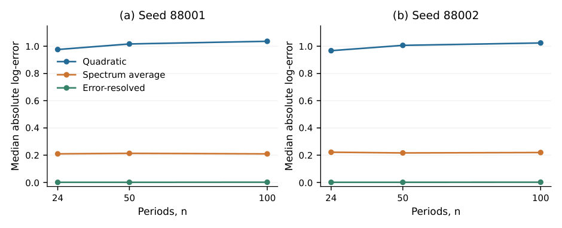
<figcaption class="paper-figure-caption"><b>Fig 3.</b> FIG. 3. Predicting repeated-endpoint error from the learned single-period residual. Each panel uses the original endpoint for one training seed on 256 common-test members. The vertical axis is the median absolute difference between predicted and measured log10 process infidelity, evaluated at the indicated period count. The quadratic estimate, spectrum-averaged estimate, and error-resolved prediction are P0, P1, and P2, respectively. Exact matrix powers supply the measured errors.</figcaption>
</figure>
<figure class="paper-figure-card">

<figcaption class="paper-figure-caption"><b>Fig 4.</b> FIG. 4. Residual-orientation intervention at matched single-period process accuracy. Original learned residuals are projected into commuting and mixing components relative to the reference endpoint, then separately rescaled to match the same member’s single-period infidelity. Curves show process-fidelity p05 on 254 paired members for seed 88001 and 255 for seed 88002, drawn from the same fixed 256-member subset. Both directions within a panel use identical member indices. Matching, degeneracy, and admissibility rules are fixed before evaluation and given in Appendix L.</figcaption>
</figure>
<figure class="paper-figure-card">

<figcaption class="paper-figure-caption"><b>Fig 5.</b> FIG. 5. Worst-time worst-input accuracy of the original and continued QENs on 256 common-test members. Each curve uses a validation-selected endpoint and the same frozen path network, with the endpoint prediction inserted into that path’s boundary condition. Fidelity is minimized across all queried times and input states within each window. C coincides with the original curve because validation selects update 0.</figcaption>
</figure>
</div>

<p><strong>Summary.</strong> This paper introduces Quantum Evolution Networks (QENs) to model the complex, long-time dynamics of driven spin registers. The QEN framework learns the unitary propagator by decomposing it into reusable, structured components. The results demonstrate that this neural approach maintains high fidelity over many periods, establishing a powerful, scalable tool for simulating quantum evolution.</p>
<p><strong>Why it may be interesting.</strong> This work directly addresses the computational bottleneck in simulating open or driven quantum systems by providing a data-driven, structured neural surrogate for the time evolution operator, which is crucial for quantum control and simulation.</p>
<details>
<summary>Detailed structure</summary>
<p><strong>Main problem.</strong> The core challenge is developing a reusable neural model capable of predicting and controlling the dynamics of periodically driven quantum systems over long time scales while strictly preserving unitary structure.</p>
<p><strong>Main result.</strong> The proposed Quantum Evolution Networks (QENs) successfully learn a reusable representation of the propagator family, achieving high fidelity (e.g., 0.9947 fifth-percentile fidelity) over many periods.</p>
<p><strong>Method.</strong> The authors introduce QENs, which approximate the propagator by learning a unitary one-period propagator and a compatible within-period path, enabling prediction via known periodic composition.</p>
<p><strong>Model / system.</strong> The system studied is a periodically driven three-spin central-spin register, governed by a time-dependent Hamiltonian $H(t; \lambda)$ involving exchange and longitudinal interactions.</p>
<p><strong>Key observables.</strong> Fifth-percentile fidelity ($p_{05}$), process fidelity, worst-input fidelity, and the residual structure of the learned propagator.</p>
<p><strong>Important parameters / regimes.</strong> Driving parameters (e.g., $g_m, \Delta e, \Omega_0$), evolution time (measured in periods, e.g., 24 periods), and the number of spins (three-spin register).</p>
<p><strong>Assumptions / limitations.</strong> The method assumes that the overall propagator can be accurately reconstructed by composing learned, compatible components (one-period propagator and within-period path).</p>
<p><strong>Figures summary.</strong> Figures illustrate the architecture of the QENs for different driving types (longitudinal vs. transverse) and show empirical reliability windows mapping fidelity against evolution time.</p>
<p><strong>Paper structure.</strong> The paper introduces the QEN framework, details the structure-constrained learning process for the propagator, rigorously analyzes error accumulation by separating residual contributions, and validates the method's long-time reliability through extensive fidelity measurements.</p>
</details>
<details>
<summary>Abstract</summary>
<p>Predicting and controlling driven quantum systems requires access to dynamics across physical parameters, initial states, and evolution times. A reusable neural model must capture this dependence while preserving unitary structure and maintaining accuracy over long-time coherent evolution. Here we introduce Quantum Evolution Networks (QENs), which map physical parameters and time to complete propagators for periodically driven three-spin registers. Shared networks learn unitary one-period propagators and compatible within-period paths, enabling predictions through known periodic composition without query-specific numerical integration. For transverse driving, the fifth-percentile fidelity, minimized over input states and sampled times, is 0.9947 over 24 periods on 256 held-out configurations. A leading-order analysis of spectrally resolved endpoint residuals predicts multicycle process error more accurately than quadratic or spectrum-averaged estimates. Interventions at matched single-period infidelity produce orders-of-magnitude differences in multicycle infidelity, demonstrating the importance of residual orientation. Compatible component replacements identify how endpoint and within-period approximations limit reconstruction accuracy. These results establish a reusable neural representation of the studied propagator families and connect its learned residual structure to its observed long-time reliability.</p>
</details>
<p><sub><a href="#top">↑ back to top</a></sub></p>

<p><a id="paper-2610.31792"></a></p>
<h3 id="quantum-complexity-and-stabilizer-state-expansions-from-pairing-to-deformation-in-fermionic-systems"><a href="http://arxiv.org/abs/2610.31792v1">Quantum Complexity and Stabilizer-State Expansions: From Pairing to Deformation in Fermionic Systems</a></h3>
<p><strong>Authors:</strong> S. Momme Hengstenberg, Caroline E. P. Robin<br>
<strong>Type:</strong> theory · <strong>Category:</strong> strongly correlated electrons · <strong>PDF:</strong> <a href="https://arxiv.org/pdf/2610.31792v1">https://arxiv.org/pdf/2610.31792v1</a><br>
<strong>Analysis basis:</strong> full PDF text, analyzed in chunks
<strong>Topic relevance:</strong> <code>analog quantum simulation</code> <strong>3/5</strong> · <code>Keldysh / 2PI / non-Gaussian methods</code> <strong>2/5</strong> · <code>quantum measurements</code> <strong>1/5</strong></p>
<div class="figure-strip-hint">↔ Scroll figures horizontally</div>
<div class="paper-figures-scroll">
<figure class="paper-figure-card">

<figcaption class="paper-figure-caption"><b>Fig 1.</b> FIG. 4. Ratios of von Neumann entanglement entropies over the corresponding maximal value SA/Smax A for the left/right bi-partitioning (left panel), and up/down bi-partitioning (right panel), as a function of interaction parameters ¯v and ¯g. Note the different scales on the plot.</figcaption>
</figure>
<figure class="paper-figure-card">

<figcaption class="paper-figure-caption"><b>Fig 2.</b> FIG. 5. All types of 4-tangles for a system Ω= 8. Note the different scales.</figcaption>
</figure>
<figure class="paper-figure-card">

<figcaption class="paper-figure-caption"><b>Fig 3.</b> FIG. 6. Entanglement depth n certifying genuine n-partite entanglement, where each party refers to a mode or a pair (two orbitals), for a system with Ω= 8.</figcaption>
</figure>
<figure class="paper-figure-card">

<figcaption class="paper-figure-caption"><b>Fig 4.</b> Fig. 6 displays the entanglement depth n = m + 1 for a system with Ω= 8. In the normal phase, for ¯g and ¯v ≲1 −2, the Agassi ground state presents little multi-partite entanglement, as already noted from the n-tangles. The deformed phase, on the other hand, displays maximal entanglement depth n = Ω, indicating that all Ωmodes are genuinely collectively entangled with each other. This is seen for various values of Ω4. In the superfluid phase, while multi-partite entanglement is present, the entanglement depth is lower and indicates that only at least 6 pairs are genuinely entangled. Interestingly the entanglement depth is lower at the phase transitions.</figcaption>
</figure>
<figure class="paper-figure-card">

<figcaption class="paper-figure-caption"><b>Fig 5.</b> FIG. 7. Full-state and non-local 2-SRE, M2 and M(NL) 2 , for Ω= 8 as a function of ¯v and ¯g.</figcaption>
</figure>
</div>

<p><strong>Summary.</strong> This work analyzes the quantum complexity of interacting fermionic systems using the Agassi model to study pairing and deformation. It characterizes these phases using measures like entanglement and non-stabilizerness, demonstrating that symmetry-preserving basis rotations can drastically reduce the required resources for quantum state representation. This provides a theoretical roadmap for simulating complex correlated electron phenomena.</p>
<p><strong>Why it may be interesting.</strong> The connection drawn between physical phases (pairing/deformation) and quantifiable measures of quantum complexity (non-stabilizerness, entanglement) provides a powerful theoretical framework for assessing the computational difficulty of many-body quantum simulations.</p>
<details>
<summary>Detailed structure</summary>
<p><strong>Main problem.</strong> The paper investigates how collective phenomena like pairing and deformation emerge in interacting fermionic systems and how the underlying quantum correlations dictate the resources needed for their simulation.</p>
<p><strong>Main result.</strong> The study shows that while the pairing phase requires an exponentially growing number of stabilizer states, a symmetry-preserving basis rotation allows for a high-fidelity approximation using far fewer states, providing a practical quantum starting point.</p>
<p><strong>Method.</strong> The research combines quantum complexity measures (entanglement, non-stabilizerness, fermionic non-Gaussianity) with advanced theoretical techniques, including stabilizer-state expansion and variational basis optimization.</p>
<p><strong>Model / system.</strong> The system analyzed is the Agassi model, describing interacting fermions on two levels, which exhibits rich phase structures including normal, deformed, and superfluid BCS phases.</p>
<p><strong>Key observables.</strong> Entanglement entropy, $n$-tangles, Quantum Fisher Information (QFI), non-stabilizerness, and fermionic anti-flatness (FAF).</p>
<p><strong>Important parameters / regimes.</strong> The relative strengths of interaction parameters ($\epsilon, V, g$) govern the transition between different collective phases.</p>
<p><strong>Assumptions / limitations.</strong> The analysis relies on mapping the fermionic system to qubits (Jordan-Wigner map) and assumes that connecting physical phenomena to quantum complexity measures is relevant for quantum simulation resource estimation.</p>
<p><strong>Figures summary.</strong> Figures illustrate the phase diagram, entanglement scaling with system size ($\Omega$), and the relative entropy $S(
ho_G)$ as a function of interaction parameters.</p>
<p><strong>Paper structure.</strong> The paper systematically analyzes the Hamiltonian structure, applies various complexity measures to characterize different phases (deformed vs. superfluid), and finally proposes a scalable, symmetry-preserving method using stabilizer state expansions for practical quantum simulation.</p>
</details>
<details>
<summary>Abstract</summary>
<p>Understanding how collective phenomena such as pairing and deformation emerge in interacting fermionic systems, and how the correlations underlying them shape the resources required for their simulation, is a central challenge in many-body physics. We investigate various aspects of quantum complexity in a fermionic system exhibiting two main forms of collectivity, specifically deformation and pairing, through entanglement, non-stabilizerness, and fermionic non-Gaussianity. In the deformed phase, high entanglement coexists with low non-stabilizerness, while the superfluid pairing phase, by contrast, exhibits substantial multipartite entanglement and non-stabilizerness, together with maximal fermionic anti-flatness. In a second step we examine how to describe the phase diagram of the system in a classically scalable and symmetry-preserving way, by combining stabilizer-state expansion and variational basis optimization. A physics-guided decomposition of the Hamiltonian identifies the relevant stabilizer states, which can be constructed from graph states. A single stabilizer state captures the deformed phase to a large extent, and, although the number of stabilizer states required to describe the pairing phase grows exponentially with system size, a symmetry-preserving basis rotation yields a high-fidelity approximation using far fewer states. This rotated state can then serve as a practical starting point for quantum refinement.</p>
</details>
<p><sub><a href="#top">↑ back to top</a></sub></p>

<p><a id="paper-2610.32754"></a></p>
<h3 id="tensor-networks-for-materials-simulation-and-quantum-chemistry"><a href="http://arxiv.org/abs/2610.32754v1">Tensor Networks for Materials Simulation and Quantum Chemistry</a></h3>
<p><strong>Authors:</strong> Saeed S. Jahromi, Augustine Kshetrimayum, Roman Rausch, Sukhbinder Singh, Roman Orus<br>
<strong>Type:</strong> theory · <strong>Category:</strong> strongly correlated electrons · <strong>PDF:</strong> <a href="https://arxiv.org/pdf/2610.32754v1">https://arxiv.org/pdf/2610.32754v1</a><br>
<strong>Analysis basis:</strong> full PDF text, analyzed in chunks
<strong>Topic relevance:</strong> <code>analog quantum simulation</code> <strong>3/5</strong> · <code>methods for driven-dissipative</code> <strong>3/5</strong></p>
<div class="figure-strip-hint">↔ Scroll figures horizontally</div>
<div class="paper-figures-scroll">
<figure class="paper-figure-card">

<figcaption class="paper-figure-caption"><b>Fig 1.</b> Figure 1: Overview of tensor networks. (a) The dN amplitudes of a many-body wavefunction are replaced by a chain of N small tensors connected by bond indices of dimension χ; the bond dimension controls both the retained entanglement and the cost. (b) An important basis for compression is the area law obeyed by many ground states of local Hamiltonians: the entanglement entropy of a region A scales with its boundary ∂A rather than its volume. (c)–(f) The network geometry follows the entanglement structure: matrix product states (MPS) for chains and ordered orbitals, tree tensor network states (TTNS) for branched correlations, projected entangled-pair states (PEPS) for two-dimensional...</figcaption>
</figure>
<figure class="paper-figure-card">

<figcaption class="paper-figure-caption"><b>Fig 2.</b> Figure 2: The operations underlying every tensor network calculation. (a) An expectation value is the full contraction of the state, the operator, and the conjugate state. (b) Truncation by singular value decomposition keeps the χ largest Schmidt coefficients; the discarded weight ε measures the norm lost at that cut and helps assess convergence. (c) To update or measure one tensor, the rest of the network is summarized in its environment, which is exact for chains and trees but must be approximated for PEPS. (d) A ladder or cylinder is simulated with one-dimensional methods by ordering the sites along a 1D snake path through the 2D lattice; local couplings become long-range bonds and the...</figcaption>
</figure>
<figure class="paper-figure-card">

<figcaption class="paper-figure-caption"><b>Fig 3.</b> Figure 3: A map of tensor network applications to materials. The horizontal axis orders the Hamiltonian from an idealized spin model to a material-specific ab initio description; the vertical axis orders the observable from a ground-state phase to nonequilibrium and open-system response. Each marker is a representative calculation discussed in Secs. 3 and 4, coloured by the maturity of the capability it exemplifies. The historical development of the field runs along the diagonal from model ground states toward material-specific spectra and dynamics.</figcaption>
</figure>
<figure class="paper-figure-card">

<figcaption class="paper-figure-caption"><b>Fig 4.</b> Figure 4: Routes from a real material to an experimentally testable tensor network prediction. Structure, composition, and sample conditions feed one of four material-specific constructions: a model Hamilto- nian constrained by experiment, a downfolded Hamiltonian from electronic structure, a self-consistent impurity problem from dynamical mean-field theory, or an embedded fragment with an algebraic bath. A tensor network solver returns the state or correlation function from which observables are extracted and compared with experiment. Uncertainty enters at every interface (orange), and disagreement with experiment should feed back to the model or the input rather than only to the solver.</figcaption>
</figure>
</div>

<p><strong>Summary.</strong> This perspective review details how tensor networks offer a powerful, systematic method to simulate strongly correlated quantum materials and molecules. It surveys various network types and computational routes, emphasizing that accurate predictions require careful quantification of approximation errors at every step. The work aims to establish TNs as a routine, reliable tool for predictive quantum chemistry and condensed matter physics.</p>
<p><strong>Why it may be interesting.</strong> The systematic and controlled nature of TN approximations, particularly their ability to handle entanglement structure, provides a powerful, non-perturbative tool for simulating complex quantum dynamics relevant to AMO physics and open quantum systems.</p>
<details>
<summary>Detailed structure</summary>
<p><strong>Main problem.</strong> The core challenge is predicting the properties of correlated materials and molecules, which necessitates descriptions beyond simple single-particle or mean-field approximations.</p>
<p><strong>Main result.</strong> Tensor networks provide a systematically improvable, nonperturbative framework to tackle these complex many-body problems, moving the field toward routine predictive materials science.</p>
<p><strong>Method.</strong> The paper surveys the use of various tensor network representations (MPS, PEPS, MERA) to encode quantum states and Hamiltonians, allowing for controlled approximations based on entanglement structure.</p>
<p><strong>Model / system.</strong> The scope covers a wide range of systems, including quantum magnets, itinerant-fermion systems, molecular electronic structure, and strongly correlated oxides (like cuprates).</p>
<p><strong>Key observables.</strong> Ground-state properties, excitation spectra, non-equilibrium dynamics, finite-temperature observables, and correlation functions.</p>
<p><strong>Important parameters / regimes.</strong> The bond dimension ($\chi$) is the critical parameter controlling accuracy, alongside the entanglement structure and the choice of network geometry.</p>
<p><strong>Assumptions / limitations.</strong> Reliable predictions require rigorously quantifying uncertainties introduced at every stage, from Hamiltonian construction to the final observable extraction.</p>
<p><strong>Figures summary.</strong> Figures illustrate the general structure of TNs, showing how they replace exponential amplitudes with tensors connected by bond indices, and map out the four main computational routes connecting TNs to real materials.</p>
<p><strong>Paper structure.</strong> The paper introduces the principles of TNs, surveys their applications across increasing complexity (from simple models to open systems), examines four specific computational routes to real materials, and concludes with a practical guide on method selection and necessary algorithmic advances.</p>
</details>
<details>
<summary>Abstract</summary>
<p>Predicting the properties of correlated materials and molecules often requires a many-body description that goes beyond single-particle and mean-field approximations. Tensor networks address this challenge by exploiting the entanglement structure of quantum states to construct compact, systematically improvable representations. Although developed largely for idealized model Hamiltonians, these methods are increasingly being integrated into material-specific calculations. This Perspective introduces their underlying principles and examines how network geometry, bond-dimension truncation, and approximate contraction determine the accuracy and computational reach of these approaches. We survey applications across regimes of increasing complexity, ranging from ground-state properties of quantum magnets and itinerant-fermion systems to excitation spectra, nonequilibrium dynamics, finite-temperature and open systems, and molecular electronic structure. We then examine four routes connecting these methods to real materials, including experimentally constrained models, downfolded Hamiltonians, dynamical mean-field theory with tensor network impurity solvers, and quantum embedding. Throughout, we evaluate the maturity of existing capabilities and their principal limitations, synthesizing this assessment into a practical method-selection guide. We argue that reliable materials predictions require quantifying uncertainties introduced at each stage, from constructing material-specific Hamiltonians to extracting experimentally accessible observables. Finally, we identify the algorithmic advances and reproducible computational practices needed to establish tensor networks as a routine tool for predictive materials science and quantum chemistry.</p>
</details>
<p><sub><a href="#top">↑ back to top</a></sub></p>

<p><a id="paper-2610.32249"></a></p>
<h3 id="bose-einstein-condensate-in-a-shell-nonlinear-modes-and-symmetry-breaking"><a href="http://arxiv.org/abs/2610.32249v1">Bose-Einstein condensate in a shell: nonlinear modes and symmetry breaking</a></h3>
<p><strong>Authors:</strong> Alexander Wolf, Vladimir V. Konotop, Maxim A. Efremov<br>
<strong>Type:</strong> theory · <strong>Category:</strong> quantum gases · <strong>PDF:</strong> <a href="https://arxiv.org/pdf/2610.32249v1">https://arxiv.org/pdf/2610.32249v1</a><br>
<strong>Analysis basis:</strong> full PDF text, analyzed in chunks
<strong>Topic relevance:</strong> <code>analog quantum simulation</code> <strong>3/5</strong> · <code>Keldysh / 2PI / non-Gaussian methods</code> <strong>1/5</strong></p>
<div class="figure-strip-hint">↔ Scroll figures horizontally</div>
<div class="paper-figures-scroll">
<figure class="paper-figure-card">

<figcaption class="paper-figure-caption"><b>Fig 1.</b> FIG. 1. Nonlinear continuation of spherical harmonics without embedded vorticity. Central panel shows families of nonlinear modes on the (µ, G) diagram. Intervals of linearly stable and unstable solutions are displayed as solid and dashed lines, respectively. Color indicates whether the solution is Lz symmetric (blue) or asymmetric (orange). Solution families bifurcating from the linear limit G = 0, blue dots, are marked by the corresponding l quantum number attached outside the frame. Gray lines identify more unstable families resulting from bifurcations. Three states discussed in the text are illustrated to the top with the color representing the phase of the wavefunction ψ and opacity...</figcaption>
</figure>
<figure class="paper-figure-card">

<figcaption class="paper-figure-caption"><b>Fig 2.</b> FIG. 2. Stationary states with embedded vorticity. Families of nonlinear modes on the (µ, G) diagram bifurcating form the linear limit, G = 0, labeled by respective l quantum number (attached outside the frame). Intervals of linearly stable and unstable solutions are shown by solid and dashed lines, respectively. The two states displayed on the right illustrate vortices on the sphere, supported either by a BEC with repulsive interparticle interactions (top) or by a vortex soliton under attractive interactions (bottom). The phases (arguments) of the corresponding order-parameters are encoded in color, while the circular arrows indicate the directions of the associated superfluid currents.</figcaption>
</figure>
<figure class="paper-figure-card">

<figcaption class="paper-figure-caption"><b>Fig 3.</b> FIG. 3. Superposition states. The combinations Yl,l + Yl,−l are stationary in the linear regime G = 0 and can be extended into the nonlinear regime as shown in the (µ, G) diagram. Intervals of linearly stable and unstable solutions are displayed as solid and dashed lines, respectively. These states have completely asymmetric wavefunctions as exemplified on the right by the stable state F.</figcaption>
</figure>
<figure class="paper-figure-card">

<figcaption class="paper-figure-caption"><b>Fig 4.</b> FIG. 4. Multi-mode breathing dynamics. Top panel: occupation of the dominating modes |A10|2, |A22|2 + |A2,−2|2 and residual occupation of all other modes R = 1 −|A10|2 −|A22|2 −|A2,−2|2 as a function of time are obtained within the Galerkin approximation (dotted) and high-resolution numerical simulation (solid). The dynamics describes a breathing between the initial dark soliton G and the four-vortex instant state H at t = 7.9. Location of these modes on the family l = 1 is shown in Fig. 1, where H∗is a stationary state close to H. Note that the sphere displaying solutions G and H are cut for better perspective. Therefore only two (of four) vortices, highlighted by curved arrows, are...</figcaption>
</figure>
</div>

<p><strong>Summary.</strong> This paper investigates nonlinear wave phenomena in a Bose-Einstein condensate confined to a spherical shell. By analyzing the reduced Gross-Pitaevskii equation, the authors characterize various nonlinear modes, including those arising from symmetry breaking. The findings highlight that the spherical geometry fundamentally alters the physics compared to planar systems, suggesting new avenues for experimental observation.</p>
<p><strong>Why it may be interesting.</strong> This work provides crucial insights into how intrinsic curvature modifies nonlinear wave physics, predicting unconventional wave patterns that differ significantly from planar systems, which is highly relevant for experimental realization in trapped atomic systems.</p>
<details>
<summary>Detailed structure</summary>
<p><strong>Main problem.</strong> The study analyzes the emergence, stability, and dynamics of nonlinear modes in a Bose-Einstein condensate confined to a spherical shell.</p>
<p><strong>Main result.</strong> The BEC exhibits multiple classes of nonlinear modes, including those arising from symmetry-breaking bifurcations, and demonstrates complex breathing dynamics oscillating between soliton and vortex necklace states.</p>
<p><strong>Method.</strong> The analysis uses the reduced Gross-Pitaevskii equation (GPE) on the sphere, employing linear stability analysis via Bogoliubov-de Gennes (BdG) equations and a Galerkin expansion approach.</p>
<p><strong>Model / system.</strong> The system is a Bose-Einstein condensate confined to a spherical surface, modeled by an angular GPE. The interactions can be repulsive or attractive, and the physics is governed by the interplay between nonlinearity and the spherical geometry.</p>
<p><strong>Key observables.</strong> Nonlinear modes (Townes solitons, vortices), excitation spectrum ($\omega$), stability regions in the $(\mu, G)$ diagram, and breathing dynamics.</p>
<p><strong>Important parameters / regimes.</strong> Interaction strength ($G$), chemical potential ($\mu$), and angular momentum quantum numbers ($l, m$).</p>
<p><strong>Assumptions / limitations.</strong> The analysis assumes tight confinement to the spherical surface, allowing for dimensional reduction to an angular GPE, and utilizes approximations like the planar limit for comparison.</p>
<p><strong>Figures summary.</strong> Figures illustrate the nonlinear continuation of spherical harmonics, symmetry-breaking bifurcations in the $(\mu, G)$ plane, and time evolution showing multi-mode dynamics.</p>
<p><strong>Paper structure.</strong> The paper progresses by deriving the effective angular GPE, analyzing the linear stability using BdG equations, characterizing different types of nonlinear modes (Type 1 vs. Type 2), and finally demonstrating complex dynamics like breathing oscillations.</p>
</details>
<details>
<summary>Abstract</summary>
<p>The state of a quantum particle confined to a spherical surface is commonly described using spherical harmonics, which play a crucial role in solving many scientific problems featuring spherical symmetry. A mean-field description of a system of many interacting quantum particles confined to a spherical shell naturally leads to nonlinear generalizations of spherical harmonics. In this study, we analyze the emergence of such nonlinear modes in a shell-shaped Bose-Einstein condensate with both repulsive and attractive two-particle interactions. We find several classes of nonlinear modes. The first kind is an analytical continuation of a single spherical harmonic or their superposition for nonvanishing atom-atom interaction. Some of these solutions have planar counterparts in the form of Townes solitons and Townes vortices, which either appear stable even in the case of attractive interactions or can be stabilized by three-particle interactions. The second kind originate from symmetry-breaking bifurcations in the case of a repulsive interaction, and therefore have no linear counterparts. Moreover, we demonstrate the existence of a breathing dynamics that oscillates primarily between an unstable soliton and a stable vortex necklace state. Our findings show that the physics of nonlinear matter waves on curved geometries differs substantially from that in planar systems, suggesting the feasibility of observing these unconventional wave patterns experimentally.</p>
</details>
<p><sub><a href="#top">↑ back to top</a></sub></p>

<p><a id="paper-2610.32328"></a></p>
<h3 id="from-heterogeneity-to-function-enhanced-modular-dynamic-range-in-hierarchical-brain-networks"><a href="http://arxiv.org/abs/2610.32328v1">From Heterogeneity to Function: Enhanced Modular Dynamic Range in Hierarchical Brain Networks</a></h3>
<p><strong>Authors:</strong> Filipe V. Torres, Mauro Copelli, Leonardo L. Gollo<br>
<strong>Type:</strong> theory · <strong>Category:</strong> disordered systems and neural networks · <strong>PDF:</strong> <a href="https://arxiv.org/pdf/2610.32328v1">https://arxiv.org/pdf/2610.32328v1</a><br>
<strong>Analysis basis:</strong> full PDF text, analyzed in chunks
<strong>Topic relevance:</strong> <code>non-equilibrium universality</code> <strong>3/5</strong> · <code>driven-dissipative phase transition</code> <strong>1/5</strong></p>
<div class="figure-strip-hint">↔ Scroll figures horizontally</div>
<div class="paper-figures-scroll">
<figure class="paper-figure-card">

<figcaption class="paper-figure-caption"><b>Fig 1.</b> Fig 1. Empirical structural connectivity matrices (connectomes) from human, mouse, and C. elegans [47], together with a representative synthetic example of a hierarchical-modular network (HMN) with M0 = 6, m = 3, h = 8, α = 2, and ϕ = 0.25. Graph-theoretic properties are presented in Table 1 for these empirical connectomes, and in Table 2 for the HMN.</figcaption>
</figure>
<figure class="paper-figure-card">

<figcaption class="paper-figure-caption"><b>Fig 2.</b> Fig 2. A: Average of 20 adjacency matrices for varying m and h. In each matrix, m squared blocks repeat at every sub-level ℓ, up to ℓ= h. Each entry of the matrix represents a connection between two neurons. B: Example network with m = 3 and h = 4. The numbers label nested modules, and the location of a module is given by reading these labels from the outermost level inward, e.g., Z: [2, 3, 1]. C: Schematic of the same modular structure as in B, with M0 = 2; physically closer modules are more densely connected. D: Hierarchical representation of the network, where the hierarchy corresponds to the modular coordinates with trailing zeros. E, F: Number of nodes reached, Nr, as a function of...</figcaption>
</figure>
<figure class="paper-figure-card">

<figcaption class="paper-figure-caption"><b>Fig 3.</b> Fig 3. Raster plots and time series comparison of heterogeneity of each network, from homogeneous networks to highly heterogeneous ones. The first row (A, B, C) illustrates a network, exhibiting a continuum of power-law exponents and pronounced heterogeneity in local firing rates. The second row (D, E, F) corresponds to mildly heterogeneous models, which display a single power-law decay and substantially weaker heterogeneity, while the third row (G, H, I) conveys the completely homogeneous case, with single power laws and no heterogeneity in activity. Panels on the left, i.e., A, D and G show time series of the density of active sites, defined as the fraction of active nodes in the network...</figcaption>
</figure>
<figure class="paper-figure-card">

<figcaption class="paper-figure-caption"><b>Fig 4.</b> Fig 4. Dynamical heterogeneity stretches the signatures of criticality. Comparison between infinite- and finite-dimensional hierarchical-modular networks. Both networks share the same modular architecture (M0 = 6, m = 3, h = 8, α = 2), differing only in the parameter ϕ: ϕ = 0.25 for the infinite-dimensional network (A,C) and ϕ = 0.125 for the finite-dimensional network (B,D) (see Fig. 2F). A,B: spontaneous activity F0, measured as the average density of active sites over T = 104 ms across 50 realizations; error bars denote the standard deviation. C,D: temporal autocorrelation functions computed under a weak external stimulus (r = 10−6ms−1). The shaded region illustrates the definition of...</figcaption>
</figure>
<figure class="paper-figure-card">

<figcaption class="paper-figure-caption"><b>Fig 5.</b> Fig 5. Breakdown of the mean-field prediction of the critical point. A: Temporal evolution of the quantity P (0,1)</figcaption>
</figure>
</div>

<p><strong>Summary.</strong> This work models brain networks as hierarchical-modular systems to understand how they maintain optimal computation. It demonstrates that structural heterogeneity is the key mechanism allowing these networks to sustain critical-like dynamics and generate specialized computational functions. The findings establish a theoretical basis for distributed computation in complex biological systems.</p>
<p><strong>Why it may be interesting.</strong> The focus on complex, non-equilibrium dynamics, critical phenomena in disordered systems, and the emergence of functional principles (like specialization) from structural constraints is highly relevant to understanding many-body physics far from equilibrium.</p>
<details>
<summary>Detailed structure</summary>
<p><strong>Main problem.</strong> The paper investigates how the hierarchical and modular organization of brain networks supports flexible computation and functional specialization, focusing on the role of dynamic range.</p>
<p><strong>Main result.</strong> Heterogeneity in hierarchical-modular networks naturally sustains critical-like dynamics, generates hierarchical intrinsic timescales, and distributes computational sensitivity without requiring fine-tuning to criticality.</p>
<p><strong>Method.</strong> The study uses computational simulations on Hierarchical-Modular Networks (HMNs) and analyzes structural and dynamical properties through selective stimulation protocols.</p>
<p><strong>Model / system.</strong> The model is a computational excitable system representing brain architecture, structured hierarchically and modularly. Dynamics are simulated using the Susceptible-Infected-Susceptible (SIS) model on the HMN.</p>
<p><strong>Key observables.</strong> Dynamic range, intrinsic timescales (INTs), modular dynamics, and measures of heterogeneity (e.g., coefficient of variation of in-degree).</p>
<p><strong>Important parameters / regimes.</strong> Connectivity parameters ($\phi, \alpha$), external stimulus rates ($r$), and the degree of network heterogeneity.</p>
<p><strong>Assumptions / limitations.</strong> The analysis builds upon the critical brain hypothesis, utilizing the Griffiths phase concept to achieve critical-like dynamics in disordered systems.</p>
<p><strong>Figures summary.</strong> Figures compare empirical connectomes to synthetic HMNs, illustrating how structural parameters ($\phi$) control dynamic heterogeneity, and showing activity patterns across different levels of modularity.</p>
<p><strong>Paper structure.</strong> The paper establishes the problem of functional specialization in HMNs, develops the concept of modular dynamic range, and presents results showing that heterogeneity drives enhanced sensitivity and functional specialization through hierarchical timescale generation.</p>
</details>
<details>
<summary>Abstract</summary>
<p>Hierarchical and modular organization defines brain architecture, yet how it supports flexible computation and functional specialization remains unclear. Although dynamic range is a hallmark of efficient information processing, its distribution across modules and hierarchical levels remains largely unexplored. Here, we show that hierarchical-modular networks naturally generate heterogeneous modular dynamics and firing rates, extending regimes of critical-like dynamics with enhanced intrinsic timescales, reflecting critical slowing down, and diverse scaling exponents without fine-tuning near criticality. Intrinsic timescales increase across hierarchical levels, while their dispersion within levels emerges only when connectivity profiles and firing rates are heterogeneous. We introduce modular dynamic range to quantify how individual modules respond to external inputs and show that heterogeneity enhances both global and module-specific sensitivity, with modular intrinsic timescales increasing with dynamic range. Local stimulation reduces dynamic range in homogeneous networks but enhances it in heterogeneous networks relative to global stimulation. Moreover, selectively stimulating intermediate hierarchical levels maximizes both global and modular dynamic range, revealing a principle of functional specialization. In heterogeneous networks, modular dynamic range is more variable and increases even in unstimulated modules, demonstrating distributed computational benefits beyond directly stimulated regions. Together, these findings establish heterogeneity as a mechanism through which hierarchical-modular networks sustain critical-like dynamics, generate hierarchical timescales, and distribute computational sensitivity, providing a basis for functional specialization without fine-tuning to criticality.</p>
</details>
<p><sub><a href="#top">↑ back to top</a></sub></p>

<p><a id="paper-2610.32585"></a></p>
<h3 id="a-note-on-the-monotonicity-of-observational-ergotropic-advantage"><a href="http://arxiv.org/abs/2610.32585v1">A note on the monotonicity of observational ergotropic advantage</a></h3>
<p><strong>Authors:</strong> Debanjan Dey Sarkar, Mallika Mondal, Preeti Parashar<br>
<strong>Type:</strong> theory · <strong>Category:</strong> statistical mechanics · <strong>PDF:</strong> <a href="https://arxiv.org/pdf/2610.32585v1">https://arxiv.org/pdf/2610.32585v1</a><br>
<strong>Analysis basis:</strong> full PDF text, analyzed in chunks
<strong>Topic relevance:</strong> <code>quantum measurements</code> <strong>3/5</strong></p>
<div class="figure-strip-hint">↔ Scroll figures horizontally</div>
<div class="paper-figures-scroll">
<figure class="paper-figure-card">

<figcaption class="paper-figure-caption"><b>Fig 1.</b> Low-resolution page preview, page 2</figcaption>
</figure>
<figure class="paper-figure-card">

<figcaption class="paper-figure-caption"><b>Fig 2.</b> Low-resolution page preview, page 3</figcaption>
</figure>
<figure class="paper-figure-card">

<figcaption class="paper-figure-caption"><b>Fig 3.</b> Low-resolution page preview, page 4</figcaption>
</figure>
<figure class="paper-figure-card">

<figcaption class="paper-figure-caption"><b>Fig 4.</b> Low-resolution page preview, page 5</figcaption>
</figure>
<figure class="paper-figure-card">

<figcaption class="paper-figure-caption"><b>Fig 5.</b> Low-resolution page preview, page 6</figcaption>
</figure>
</div>

<p><strong>Summary.</strong> This paper develops a resource theory framework to analyze the monotonicity of the observational ergotropic advantage ($   ext{WH}<em ext_adv="ext{adv">{   ext{adv}}(M)$) in quantum systems. By defining specific free operations, the authors prove that $   ext{WH}</em>(M)$ is monotonic under these rules. Crucially, they establish that this monotonicity is only a necessary, but not sufficient, condition for measurement transformations.}</p>
<p><strong>Why it may be interesting.</strong> This work directly addresses resource theories in quantum thermodynamics, which is crucial for understanding the fundamental limits of work extraction and information processing in open quantum systems.</p>
<details>
<summary>Detailed structure</summary>
<p><strong>Main problem.</strong> The paper investigates establishing a resource theory framework where the observational ergotropic advantage ($   ext{WH}_{   ext{adv}}(M)$) exhibits monotonicity.</p>
<p><strong>Main result.</strong> The authors successfully derive the monotonicity of $  ext{WH}_{   ext{adv}}(M)$ using energy-preserving channels and passive resets as free operations. However, they prove this monotonicity is a necessary but not sufficient condition for measurement transformation, and the measure is not convex.</p>
<p><strong>Method.</strong> The analysis relies on constructing a resource theory by defining free operations (Energy-Preserving Channels and Passive Resets) and free objects (energy-incoherent measurements) to prove the monotonicity property.</p>
<p><strong>Model / system.</strong> The study concerns quantum systems governed by a Hamiltonian $H = \sum_l E_l |E_l
angle\langle E_l|$, focusing on the work extractable via measurements and operations.</p>
<p><strong>Key observables.</strong> Observational Ergotropic Advantage ($  ext{WH}<em ext_erg="ext{erg">{   ext{adv}}(M)$), Ergotropy ($ ext{W}</em>(
ho)$), and work extractable using measurements ($  ext{W}_{    ext{obs}}(
ho, M)$).}</p>
<p><strong>Important parameters / regimes.</strong> Energy-preserving channels (EPCPR) and passive resets are key operations defining the resource theory.</p>
<p><strong>Assumptions / limitations.</strong> The primary assumptions involve defining the free operations and free objects to impose the necessary monotonicity condition on the measure.</p>
<p><strong>Paper structure.</strong> The paper first introduces the observational ergotropic advantage and notes its lack of monotonicity under standard theories. It then proposes a resource theory using EPCPR and energy-incoherent measurements to derive the monotonicity (Theorem 2). Finally, it establishes that this necessary condition is not sufficient and that the measure lacks convexity (Theorem 3).</p>
</details>
<details>
<summary>Abstract</summary>
<p>Very recently, Mahanti et al. (arXiv:2609.18735) introduced the observational ergotropic advantage, which gives the maximum value of extra work that a measurement can obtain with respect to all incoherent measurements. However, the above quantity does not show monotonic behaviour under the resource theory of measurement coherence. So, the search for a resource theory in which it is a monotone was open. We derive the monotonicity of this quantity using energy-preserving channels and passive resets as free operations and energy-incoherent measurements as free objects. We show the monotonicity property of the measure as a necessary criterion of measurement transformation, but it turns out not to be a sufficient condition. It is further established that the measure is not convex. A short analysis of bounds and tightness of the measure using a degenerate Hamiltonian is also given.</p>
</details>
<p><sub><a href="#top">↑ back to top</a></sub></p>

<p><a id="paper-2610.32157"></a></p>
<h3 id="compass-correlations-in-a-square-lattice-magnet"><a href="http://arxiv.org/abs/2610.32157v1">Compass Correlations in a Square-Lattice Magnet</a></h3>
<p><strong>Authors:</strong> Otkur Omar, Matthias D. Frontzek, Gabriele Sala, Junying Shen, Xinmin Wang, Ze Hu, Zhuang Xu, Zecong Qin, Xin Tong, Joe Paddison, Max Hirschberger, Shinichiro Seki, Masaaki Matsuda, Matthew B. Stone, Andrew D. Christianson, Nguyen D. Khanh, Shang Gao<br>
<strong>Type:</strong> both · <strong>Category:</strong> strongly correlated electrons · <strong>PDF:</strong> <a href="https://arxiv.org/pdf/2610.32157v1">https://arxiv.org/pdf/2610.32157v1</a><br>
<strong>Analysis basis:</strong> full PDF text, analyzed in chunks
<strong>Topic relevance:</strong> <code>analog quantum simulation</code> <strong>3/5</strong></p>
<div class="figure-strip-hint">↔ Scroll figures horizontally</div>
<div class="paper-figures-scroll">
<figure class="paper-figure-card">

<figcaption class="paper-figure-caption"><b>Fig 1.</b> FIG. 1. Lattice geometry and compass correlations. (a) AB-stacked square lattices of rare-earth R3+ ions (orange spheres) in RRu2Si2. Double-headed arrows indicate the first-, second-, and third-neighbor Heisenberg exchange paths, J1, J2, and J3. And the interlayer coupling Jc is also indicated. Colored bonds illustrate compass couplings on the J1 (upper layer) and J2 (lower layer) bonds. (b) Calculated diffuse scattering for a spiral spin liquid with J1 = −1, J2 = 0.4, J3 = 0.2, and Jc = 0.1 meV at T = 6 K. The continuous rings reflect the degeneracy of the spiral states. (c) Calculated pattern with an additional compass coupling JC 1 = −0.2 meV. The magnetic polarization factor modulates...</figcaption>
</figure>
<figure class="paper-figure-card">

<figcaption class="paper-figure-caption"><b>Fig 2.</b> FIG. 2. Diffuse neutron scattering signatures of compass correlations in the (H, K, 0) plane. (a) NdRu2Si2: the upper-right region shows WAND2 data at T = 25 K with the 35 K background subtracted, and the lower-left region shows the fitted Ising model with J1 = −1.58(3), J2 = 0.69(1), J3 = 0.42(1), and Jc = −0.187(5) meV. (b) ErRu2Si2: the upper-right region shows WAND2 data at T = 6.3 K with the 20 K background subtracted, and the lower-left region shows the fitted compass-Heisenberg model. Black curves separate experiment and calculation.</figcaption>
</figure>
<figure class="paper-figure-card">

<figcaption class="paper-figure-caption"><b>Fig 3.</b> FIG. 4. Vortex-antivortex ground state and dipolar con- tributions in ErRu2Si2. (a) Polar χ2 map with R cos θ = JH 1 /|JC 1 +JH 1 | and R sin θ = JC 2 /|JC 1 +JH 1 |. The dashed bound- ary encloses the double-Q regime; the star and blue circle mark the optimal compass-Heisenberg and dipolar-Heisenberg models. (b) Double-Q ground-state spin configuration from classical Monte Carlo simulations. Black and white arrows denote moments in the c = 0 and c = 1/2 planes. The dashed square is the magnetic unit cell, and the background color denotes local vorticity in the c = 0 plane. (c), (d) Dipo- lar energies of representative four-state clock configurations on nearest- and next-nearest-neighbor...</figcaption>
</figure>
<figure class="paper-figure-card">

<figcaption class="paper-figure-caption"><b>Fig 4.</b> FIG. 3. Crystal-field spectra and single-ion anisotropy. (a) NdRu2Si2 spectra measured on ARCS with Ei = 50 meV and integrated over Q = 2.3–3.7 ˚A−1. (b) ErRu2Si2 spectra mea- sured on HD with Ei = 15, 30, and 50 meV and integrated over Q = 2.0–2.3, 2.6–3.2, and 2.2–2.8 ˚A−1, respectively. Cir- cles denote data, solid curves CEF fits, and gray dashed curves fitted backgrounds. Typical error bars are smaller than the markers. Yellow bars mark CEF energies. Numbered arrows identify transitions from thermally populated excited levels by their initial-level index. Traces are offset by 6.6 units in (a) and 2.2 units in (b); the Ei = 30 and 50 meV spectra in (b) are scaled by 10 and 30. Insets...</figcaption>
</figure>
</div>

<p><strong>Summary.</strong> This paper reports the experimental detection of compass correlations in the magnet $  ext{ErRu}_2 ext{Si}_2$ using neutron scattering. By comparing it to a similar compound, the authors show that the correlations are directional, which they model using a compass-Heisenberg Hamiltonian. The results strongly suggest that dipolar interactions, constrained by local crystal fields, are crucial in shaping these complex magnetic patterns.</p>
<p><strong>Why it may be interesting.</strong> The work provides a concrete, measurable platform (the square-lattice magnet) to study directional magnetic correlations driven by competing interactions (dipolar vs. exchange), which is highly relevant to understanding frustrated magnetism in correlated materials.</p>
<details>
<summary>Detailed structure</summary>
<p><strong>Main problem.</strong> The study aims to experimentally identify and theoretically model compass correlations in the square-lattice magnet $ ext{ErRu}_2 ext{Si}_2$, where direct evidence for these correlations has been difficult to obtain.</p>
<p><strong>Main result.</strong> The authors successfully identified compass correlations in $  ext{ErRu}_2 ext{Si}_2$ using neutron scattering, showing that dipolar interactions, combined with local crystal-field anisotropy, are key in shaping these directional magnetic correlations.</p>
<p><strong>Method.</strong> The research combines single-crystal neutron diffuse scattering experiments with theoretical fitting using a minimal compass-Heisenberg model.</p>
<p><strong>Model / system.</strong> The system is the rare-earth intermetallic $    ext{ErRu}_2 ext{Si}_2$, modeled by a compass-Heisenberg Hamiltonian that incorporates bond-dependent interactions and local crystal-field anisotropy derived from spectroscopy.</p>
<p><strong>Key observables.</strong> Diffuse neutron scattering patterns, specifically the strong intensity modulation between Brillouin zones in $ ext{ErRu}_2 ext{Si}_2$ compared to the uniform rings in $   ext{NdRu}_2 ext{Si}_2$.</p>
<p><strong>Important parameters / regimes.</strong> Dipolar energy scale, crystal-field parameters ($B_n^k$), and the resulting double-$Q$ vortex-antivortex ground state.</p>
<p><strong>Assumptions / limitations.</strong> The analysis assumes that the observed correlations can be quantitatively described by a minimal compass-Heisenberg model, and that dipolar interactions provide a plausible microscopic origin for the compass couplings.</p>
<p><strong>Figures summary.</strong> Figures compare diffuse scattering maps for $  ext{NdRu}_2 ext{Si}_2$ (rings) and $    ext{ErRu}_2 ext{Si}_2$ (modulated arcs), and show the $\chi^2$ landscape mapping to a double-$Q$ vortex-antivortex lattice.</p>
<p><strong>Paper structure.</strong> The paper establishes the experimental challenge, presents the comparative neutron scattering data for two isostructural compounds, develops and fits the compass-Heisenberg model to the $    ext{ErRu}_2 ext{Si}_2$ data, and concludes by linking the findings to the role of dipolar interactions.</p>
</details>
<details>
<summary>Abstract</summary>
<p>The square-lattice compass model is a paradigm of bond-dependent frustration, yet experimental evidence for its characteristic spin correlations has remained elusive. Here we identify compass correlations in the square-lattice intermetallic ErRu$_2$Si$_2$ using single-crystal neutron diffuse scattering. Comparative measurements on the isostructural compounds NdRu$_2$Si$_2$ and ErRu$_2$Si$_2$ reveal a pronounced contrast between nearly uniform diffuse rings in the former and strong intensity modulation between Brillouin zones in the latter. Through the magnetic neutron polarization factor, this modulation reveals compass correlations that couple moment orientation to the correlation wavevector. Crystal-field spectroscopy identifies four preferred in-plane orientations for the Er$^{3+}$ moments. A minimal compass-Heisenberg model incorporating this anisotropy quantitatively reproduces the diffuse scattering and accounts for the double-$Q$ vortex-antivortex ground state. Fits with the compass couplings fixed at values set by the dipolar energy scale retain good agreement with the data, supporting a substantial dipolar contribution to the bond-dependent interactions. Our results establish a square-lattice platform for compass physics and suggest that dipolar interactions, acting together with local crystal-field anisotropy, can shape directional magnetic correlations alongside conduction-electron-mediated exchange.</p>
</details>
<p><sub><a href="#top">↑ back to top</a></sub></p>

<p><a id="paper-2610.32319"></a></p>
<h3 id="finite-nonsignalling-resources-suffice-to-simulate-entangled-qubits"><a href="http://arxiv.org/abs/2610.32319v1">Finite Nonsignalling Resources Suffice to Simulate Entangled Qubits</a></h3>
<p><strong>Authors:</strong> Ziao Tang, Xin Wang, Ge Bai<br>
<strong>Type:</strong> theory · <strong>Category:</strong> quantum information and computing · <strong>PDF:</strong> <a href="https://arxiv.org/pdf/2610.32319v1">https://arxiv.org/pdf/2610.32319v1</a><br>
<strong>Analysis basis:</strong> full PDF text, analyzed in chunks
<strong>Topic relevance:</strong> <code>quantum measurements</code> <strong>3/5</strong></p>
<div class="figure-strip-hint">↔ Scroll figures horizontally</div>
<div class="paper-figures-scroll">
<figure class="paper-figure-card">

<figcaption class="paper-figure-caption"><b>Fig 1.</b> FIG. 1. Exact simulation of the nonlocal branch (probability 1 −c). (a) The highlighted front patch and its antipodal back patch together form Cj. Each such pair supplies one independent, area-uniform blue candidate ωj. Dark filled and pale outlined markers indicate front and back samples, respectively. The independent orange star ωN is uniform over the sphere. The grid is illustrative. (b) Schematic decomposition into a regional lower envelope (blue) and a residual (orange). Alice selects ωN with probability hx(ωN), otherwise ωj with conditional probability wj(x)/Wx. (c) Alice’s index I and Bob’s full table z enter RN, which returns individually fair bits u, v with parity zI. Inside RN,...</figcaption>
</figure>
</div>

<p><strong>Summary.</strong> This theoretical paper resolves a long-standing question in Bell nonlocality by demonstrating that the continuous correlations of entangled qubits can be perfectly simulated using only a finite, fixed number of non-signalling resources (PR boxes). The authors achieve this by replacing continuous sampling with a finite-list selection protocol, establishing a concrete, state-dependent upper bound on the required resource cost.</p>
<p><strong>Why it may be interesting.</strong> This work provides a fundamental resource-theoretic separation, showing that the continuity of quantum correlations can be captured by a finite, albeit state-dependent, resource budget, which has implications for device-independent quantum cryptography and resource quantification.</p>
<details>
<summary>Detailed structure</summary>
<p><strong>Main problem.</strong> The paper addresses whether finite-alphabet nonsignalling resources, such as Popescu-Rohrlich (PR) boxes, are sufficient to exactly simulate the continuous measurement correlations inherent in partially entangled qubits.</p>
<p><strong>Main result.</strong> It proves that every fixed pure two-qubit state can have its local projective-measurement statistics exactly simulated using only shared randomness and a finite number of parallel PR boxes, without communication or postselection.</p>
<p><strong>Method.</strong> The core method involves decomposing the quantum correlation into local and nonlocal parts and replacing continuous input-dependent sampling with an exact selection mechanism derived from a fixed-length shared random list, implemented via a finite PR-box network.</p>
<p><strong>Model / system.</strong> The study focuses on pure two-qubit states, specifically the Schmidt state $|\psi_	heta
angle$, and the simulation of local binary-outcome Positive Operator-Valued Measures (POVMs) acting on these states.</p>
<p><strong>Key observables.</strong> The target quantum correlations $P_	heta(\alpha, eta | x, y)$ and the required number of PR-box calls, $K(	heta)$.</p>
<p><strong>Important parameters / regimes.</strong> The entanglement parameter $    heta$, which dictates the worst-case resource cost $K(	heta) \le 128 \cot^4 	heta$.</p>
<p><strong>Assumptions / limitations.</strong> The simulation relies on an 'exact-real model' for finite procedures and assumes the existence of a fixed, finite shared random list to replace continuous sampling.</p>
<p><strong>Figures summary.</strong> Figure 1 illustrates the three components of the nonlocal simulation: shared candidate list preparation, the exact local selection mechanism, and the nonsignalling coordination using PR boxes.</p>
<p><strong>Paper structure.</strong> The paper develops the simulation by first decomposing the correlation, then constructing a finite-envelope selection method (Lemma S1), applying this to the qubit structure via spherical partitioning, and finally realizing the output distribution using an index-box construction based on PR relations.</p>
</details>
<details>
<summary>Abstract</summary>
<p>A longstanding question in Bell nonlocality is whether finite-alphabet nonsignalling resources can reproduce the continuum of measurement correlations of partially entangled qubits. Here we resolve this problem by showing that every fixed pure two-qubit state admits an exact simulation of all local projective-measurement statistics using shared randomness and finitely many Popescu-Rohrlich (PR) boxes, without communication or postselection. The boxes operate in parallel, with a worst-case bound independent of the measurement settings: at most $128\cot^4θ$ calls for the Schmidt state $\cosθ|00\rangle+\sinθ|11\rangle$, $0<θ<π/4$. The key is an exact finite-selection method that reduces input-dependent continuous sampling to a choice from a fixed-length shared random list, implemented through a finite PR-box network. The construction extends to arbitrary mixed two-qubit states and local binary-outcome POVMs. This reveals a fundamental separation between the continuity of quantum measurement correlations and the alphabet size of the resources needed to simulate them, shedding light on the resource-theoretic structure of Bell nonlocality.</p>
</details>
<p><sub><a href="#top">↑ back to top</a></sub></p>
<hr>
<p>
<a href="index.html">← Index</a>
 · <a href="papers_01.html">← Previous</a> · <a href="papers_03.html">Next →</a>
</p>
<hr>

</body>
</html>
